<!doctype html>
<html lang="en">
<head>
  <meta charset="utf-8">
  <meta name="viewport" content="width=device-width, initial-scale=1">
  <title>arxiv digest — 2026-09-02</title>
  <style>
:root {
  --bg: #ffffff;
  --fg: #1f2328;
  --muted: #59636e;
  --border: #d0d7de;
  --card: #f6f8fa;
  --link: #0969da;
}
body {
  max-width: 980px;
  margin: 0 auto;
  padding: 2rem 1rem 5rem;
  font-family: -apple-system, BlinkMacSystemFont, "Segoe UI", Helvetica, Arial, sans-serif;
  line-height: 1.55;
  color: var(--fg);
  background: var(--bg);
}
a { color: var(--link); }
img { max-width: 100%; height: auto; }
pre, code { background: var(--card); border-radius: 6px; }
pre { padding: 1rem; overflow-x: auto; }
blockquote { border-left: 4px solid var(--border); padding-left: 1rem; color: var(--muted); }
details { margin: 0.6rem 0; }
summary { cursor: pointer; font-weight: 600; }
.paper-figures-scroll {
  display: flex;
  gap: 1rem;
  overflow-x: auto;
  overscroll-behavior-x: contain;
  padding: 0.75rem 0.25rem 1rem;
  margin: 1rem 0 1.25rem;
  border-top: 1px solid var(--border);
  border-bottom: 1px solid var(--border);
  scroll-snap-type: x proximity;
}
.paper-figure-card {
  flex: 0 0 min(260px, 72vw);
  scroll-snap-align: start;
  background: var(--card);
  border: 1px solid var(--border);
  border-radius: 12px;
  padding: 0.55rem;
}
.paper-figure-card img {
  display: block;
  width: 100%;
  max-height: 240px;
  object-fit: contain;
  background: white;
  border-radius: 8px;
}
.paper-figure-caption {
  display: block;
  margin-top: 0.5rem;
  color: var(--muted);
  font-size: 0.85rem;
}
.figure-strip-hint {
  color: var(--muted);
  font-size: 0.9rem;
  margin-bottom: -0.3rem;
}
</style>
  <!-- MathJax: renders $...$ inline math and $$...$$ display math, plus
       \(...\) and \[...\]. Loaded from the official CDN; works offline
       once cached. Configured to skip code/pre blocks so arxiv IDs that
       look like dollar amounts don't get mangled. -->
  <script>
    window.MathJax = {
      tex: {
        inlineMath: [['$', '$'], ['\\(', '\\)']],
        displayMath: [['$$', '$$'], ['\\[', '\\]']],
        processEscapes: true,
        processEnvironments: true
      },
      options: {
        skipHtmlTags: ['script', 'noscript', 'style', 'textarea', 'pre', 'code'],
        ignoreHtmlClass: 'tex2jax_ignore',
        processHtmlClass: 'tex2jax_process'
      }
    };
  </script>
  <script id="MathJax-script" async
    src="https://cdn.jsdelivr.net/npm/mathjax@3/es5/tex-chtml.js"></script>
</head>
<body>
<header style="background-color: #333; color: white; padding: 15px; margin-bottom: 20px;">
  <h1 style="margin: 0; font-size: 24px;">
    <a href="https://ochelpan.github.io/arXiv_clean/" style="color: white; text-decoration: none;">Main</a>
  </h1>
</header>

<h1>Daily arXiv Report</h1>

<hr>
<p>
<a href="index.html">← Index</a>
 · <a href="papers_03.html">← Previous</a> · <a href="papers_05.html">Next →</a>
</p>
<hr>

<h2>Papers 61–80</h2>
<p><a id="paper-2608.29173"></a></p>
<h3 id="probabilistic-generation-of-two-mode-binomial-cat-states-using-cross-kerr-interactions"><a href="http://arxiv.org/abs/2608.29173v1">Probabilistic generation of two-mode binomial cat states using cross-Kerr interactions</a></h3>
<p><strong>Authors:</strong> S. Zhao, A. Metelmann, S. Qvarfort<br>
<strong>Type:</strong> theory · <strong>Category:</strong> quantum information and computing · <strong>PDF:</strong> <a href="https://arxiv.org/pdf/2608.29173v1">https://arxiv.org/pdf/2608.29173v1</a><br>
<strong>Analysis basis:</strong> full PDF text, analyzed in chunks
<strong>Topic relevance:</strong> <code>quantum measurements</code> <strong>3/5</strong> · <code>methods for driven-dissipative</code> <strong>2/5</strong> · <code>QC/QI experiment</code> <strong>1/5</strong> · <code>quantum optics experiment</code> <strong>1/5</strong></p>
<div class="figure-strip-hint">↔ Scroll figures horizontally</div>
<div class="paper-figures-scroll">
<figure class="paper-figure-card">
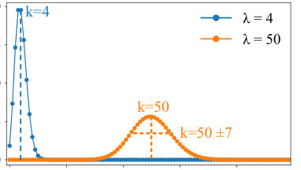
<figcaption class="paper-figure-caption"><b>Fig 1.</b> FIG. 1. Success probability P(k) (from Eq. (5)) of the pro- tocol in the ideal case, for λ = 4 and λ = 50. The vertical dashed lines indicate the most probable value of k, while the horizontal dashed line marks the range of k considered as suc- cessful outcomes. Although other sufficiently large values of k outside this range also constitute successful outcomes in prin- ciple, their probabilities carry much smaller weights, which in turn results in a lower-fidelity on the heralded cat state.</figcaption>
</figure>
<figure class="paper-figure-card">
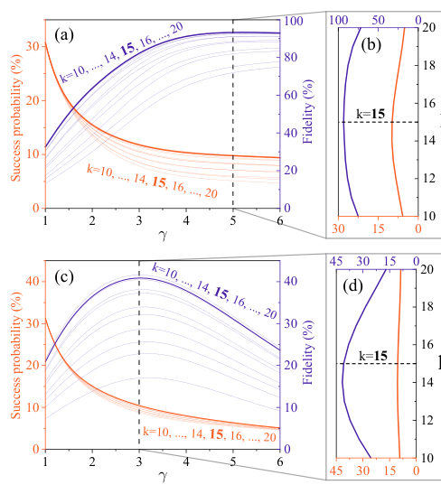
<figcaption class="paper-figure-caption"><b>Fig 2.</b> FIG. 2. Fidelity and success probability of the protocol in the presence of single-photon loss, using gac = gbc = √</figcaption>
</figure>
</div>

<p><strong>Summary.</strong> This paper details a protocol to generate valuable two-mode binomial cat states for quantum error correction using only Gaussian initial states and cross-Kerr interactions in superconducting circuits. By utilizing heralded heterodyne measurements, the authors overcome the major experimental hurdle of requiring non-Gaussian initial resources. The analysis rigorously examines the impact of dissipation and proposes strategies to maintain high state fidelity.</p>
<p><strong>Why it may be interesting.</strong> This work directly addresses resource state generation for CV-QEC, providing a concrete, experimentally viable pathway using established superconducting circuit platforms.</p>
<details>
<summary>Detailed structure</summary>
<p><strong>Main problem.</strong> The primary challenge is the probabilistic generation of two-mode binomial cat states, which are crucial resources for continuous-variable quantum error correction.</p>
<p><strong>Main result.</strong> The authors propose a protocol that successfully generates these cat states using only Gaussian initial states and heralded heterodyne measurements, circumventing the need for difficult-to-realize non-Gaussian resources.</p>
<p><strong>Method.</strong> The protocol involves evolving a three-mode bosonic system governed by cross-Kerr interactions, followed by a heralded measurement on an auxiliary mode.</p>
<p><strong>Model / system.</strong> The system is modeled using a three-mode bosonic system implemented in superconducting circuit architectures, governed by a Hamiltonian including self-Kerr and cross-Kerr nonlinearities. Dissipation is included via a Lindblad master equation.</p>
<p><strong>Key observables.</strong> Success probability density $Q_{
ho}(k)$ and the fidelity $F(k)$ of the generated state are key diagnostics.</p>
<p><strong>Important parameters / regimes.</strong> The initial coherent amplitudes ($\alpha, eta, \gamma$), the interaction strengths ($g_{ac}, g_{bc}, g_c$), and the decay rates ($\kappa_\eta$) are critical parameters.</p>
<p><strong>Assumptions / limitations.</strong> Approximations include treating the measurement as a projector and analyzing the state evolution under the assumption of specific functional forms for decoherence factors.</p>
<p><strong>Figures summary.</strong> The notes mention Figure 1, which illustrates the protocol, but no detailed content is provided.</p>
<p><strong>Paper structure.</strong> The paper progresses from establishing the need for the state, detailing the ideal protocol steps (Hamiltonian evolution and measurement), analyzing the effects of dissipation (Lindblad equation), and finally discussing strategies to improve fidelity by modifying measurement or initial amplitudes.</p>
</details>
<details>
<summary>Abstract</summary>
<p>Superpositions of macroscopically distinct coherent states, or cat states, are a key resource for quantum technologies. In particular, two-mode binomial cat states can give rise to exact quantum error correction in continuous-variable quantum computing. However, their preparation typically requires non-Gaussian initial states, such as Fock or NOON states, which are challenging to realize experimentally. Here, we propose a protocol to generate two-mode binomial cat states where the only requirements are Gaussian initial states in combination with heralded heterodyne measurements. Our approach utilizes cross-Kerr interactions between bosonic modes commonly realizable in superconducting circuit architectures. We show that by adjusting the input state parameters, our protocol remains robust to dissipation under realistic experimental conditions. Our work provides a practical route to realizing multinomial cat states in current experimental platforms without requiring non-Gaussian initial resources, overcoming a key limitation of existing preparation schemes.</p>
</details>
<p><sub><a href="#top">↑ back to top</a></sub></p>

<p><a id="paper-2608.29777"></a></p>
<h3 id="representation-transitions-reveal-predictive-structure-in-complex-systems-a-trajectory-level-reconstruction-in-a-critical-system"><a href="http://arxiv.org/abs/2608.29777v1">Representation Transitions Reveal Predictive Structure in Complex Systems: A Trajectory-Level Reconstruction in a Critical System</a></h3>
<p><strong>Authors:</strong> Jiaqi Pan<br>
<strong>Type:</strong> theory · <strong>Category:</strong> statistical mechanics · <strong>PDF:</strong> <a href="https://arxiv.org/pdf/2608.29777v1">https://arxiv.org/pdf/2608.29777v1</a><br>
<strong>Analysis basis:</strong> full PDF text, analyzed in chunks
<strong>Topic relevance:</strong> <code>quantum measurements</code> <strong>3/5</strong> · <code>analog quantum simulation</code> <strong>1/5</strong> · <code>driven-dissipative phase transition</code> <strong>1/5</strong> · <code>methods for driven-dissipative</code> <strong>1/5</strong> · <code>non-equilibrium universality</code> <strong>1/5</strong></p>
<div class="figure-strip-hint">↔ Scroll figures horizontally</div>
<div class="paper-figures-scroll">
<figure class="paper-figure-card">
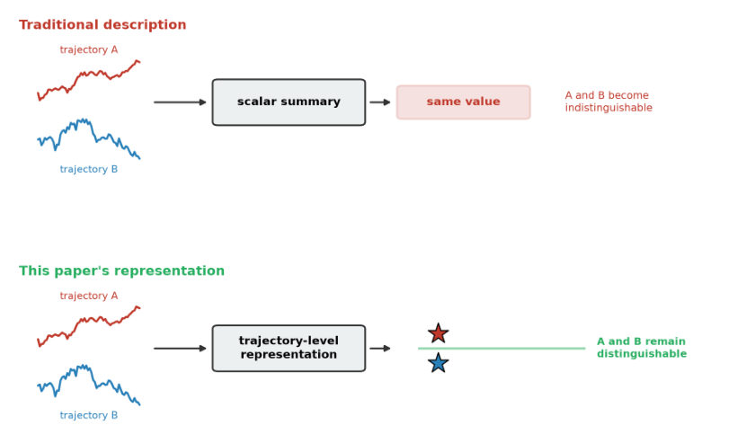
<figcaption class="paper-figure-caption"><b>Fig 1.</b> Figure 1: Problem definition: same trajectory data, different representations, different predictive accessibility.</figcaption>
</figure>
<figure class="paper-figure-card">
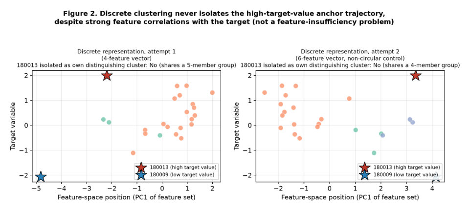
<figcaption class="paper-figure-caption"><b>Fig 2.</b> Figure 2: Discrete clustering never isolates the high-target-value anchor trajectory, despite strong feature correlations with the target (not a feature-insufficiency problem).</figcaption>
</figure>
<figure class="paper-figure-card">
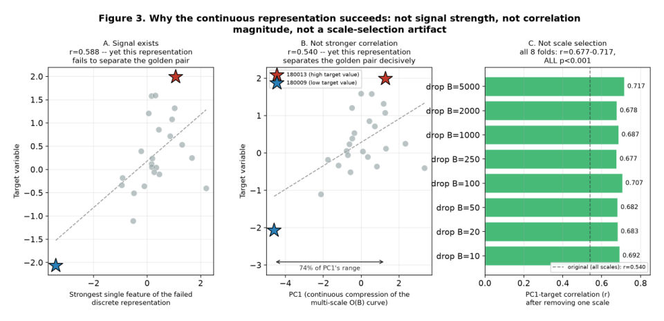
<figcaption class="paper-figure-caption"><b>Fig 3.</b> Figure 3: Why the continuous representation succeeds: not signal strength, not correlation mag- nitude, not a scale-selection artifact. A: failed representation’s signal (r = 0.588 — signal exists). B: successful representation (r = 0.540, 74% separation — not stronger correlation). C: 8-fold leave-one-scale-out (r = 0.677–0.717, all p &lt; 0.001 — not a scale-selection artifact).</figcaption>
</figure>
</div>

<p><strong>Summary.</strong> This paper investigates how the mathematical representation used to describe complex system trajectories dictates whether predictive structure can be found. By comparing scalar, discrete, and continuous representations, the authors find that continuous compression successfully reveals predictive patterns where simpler methods fail, suggesting representation choice is a critical scientific variable in complex systems analysis.</p>
<p><strong>Why it may be interesting.</strong> While not directly about quantum dynamics, the core concept—that the choice of mathematical representation dictates what physical structure is observable or predictable—is highly relevant to interpreting complex quantum data, such as state vectors or time evolution paths.</p>
<details>
<summary>Detailed structure</summary>
<p><strong>Main problem.</strong> The core problem is determining which mathematical representation of a system's trajectory preserves the structural information necessary to predict its future behavior, rather than simply maximizing correlation.</p>
<p><strong>Main result.</strong> Continuous, low-dimensional compression of the trajectory successfully reveals predictive structure robustly, whereas discrete or simple scalar representations fail, even when strong individual correlations exist.</p>
<p><strong>Method.</strong> The authors systematically compared multiple representations—including scalar statistics, discrete multi-feature vectors, and continuous compression (via PCA)—applied to the same trajectory ensemble in a critical system.</p>
<p><strong>Model / system.</strong> The study analyzes trajectory ensembles generated from a critical complex system. The focus is on the mathematical structure of the trajectories rather than the specific Hamiltonian or physical details of the system itself.</p>
<p><strong>Key observables.</strong> The primary observables are the correlation coefficient ($r$) between the representation's features and a target variable (downstream behavioral divergence), and the success of out-of-sample prediction tests across multiple scale-removal folds.</p>
<p><strong>Important parameters / regimes.</strong> The analysis involves testing different representation types (scalar vs. discrete vs. continuous) and assessing robustness by removing individual 'manipulation scales' (leave-one-scale-out).</p>
<p><strong>Assumptions / limitations.</strong> The study is explicitly epistemic, testing observability rather than claiming causality. It assumes that the failure of simpler representations is due to a 'representation-family mismatch.'</p>
<p><strong>Figures summary.</strong> Figure 1 summarizes the comparison across different representations. Figure 2 shows that discrete clustering fails to isolate high-target-value trajectories despite strong feature correlations. Figure 3 demonstrates the success and robustness of the continuous representation across multiple scale-removal folds.</p>
<p><strong>Paper structure.</strong> The paper progresses by first showing the inadequacy of single scalar statistics, then demonstrating the failure of increasing discrete complexity, and finally establishing the success and robustness of continuous low-dimensional compression as the determining factor for predictive accessibility.</p>
</details>
<details>
<summary>Abstract</summary>
<p>Trajectories in complex systems often contain structure that is not captured by the population-averaged, scalar statistics traditionally used to describe them. Here we reconstruct, through independent numerical re-simulation rather than literature review, a systematic search across representational forms - from single scalar statistics, through two independent discrete multi-feature classification attempts, to a trajectory-level structural representation and a diagnostic surrogate test, to a continuous low-dimensional compression - applied to the same underlying trajectory ensemble in a critical complex system. Predictive failure is not explained by insufficient correlation: one discrete representation's own strongest individual feature correlates with the target more strongly ($r=0.588$) than the eventual successful representation's own headline statistic ($r=0.540$), yet fails to separate the ensemble's two most consequential cases - while the continuous representation succeeds, robustly, across eight independent scale-removal folds ($r=0.677$-$0.717$, all $p<0.001$). The determining factor was not correlation strength but whether the representation preserved the structure relevant to prediction. These results indicate that the choice of representation determines whether predictive structure in complex systems becomes accessible - a scientific variable in its own right, not a downstream analysis choice.</p>
</details>
<p><sub><a href="#top">↑ back to top</a></sub></p>

<p><a id="paper-2608.29353"></a></p>
<h3 id="spinor-structure-from-relativistic-mass-shell-factorisation-in-phase-space"><a href="http://arxiv.org/abs/2608.29353v1">Spinor Structure from Relativistic Mass-Shell Factorisation in Phase Space</a></h3>
<p><strong>Authors:</strong> Mark Everitt<br>
<strong>Type:</strong> theory · <strong>Category:</strong> other · <strong>PDF:</strong> <a href="https://arxiv.org/pdf/2608.29353v1">https://arxiv.org/pdf/2608.29353v1</a><br>
<strong>Analysis basis:</strong> full PDF text, analyzed in chunks
<strong>Topic relevance:</strong> <code>Keldysh / 2PI / non-Gaussian methods</code> <strong>3/5</strong> · <code>methods for driven-dissipative</code> <strong>3/5</strong> · <code>quantum measurements</code> <strong>1/5</strong></p>
<div class="figure-strip-hint">↔ Scroll figures horizontally</div>
<div class="paper-figures-scroll">
<figure class="paper-figure-card">
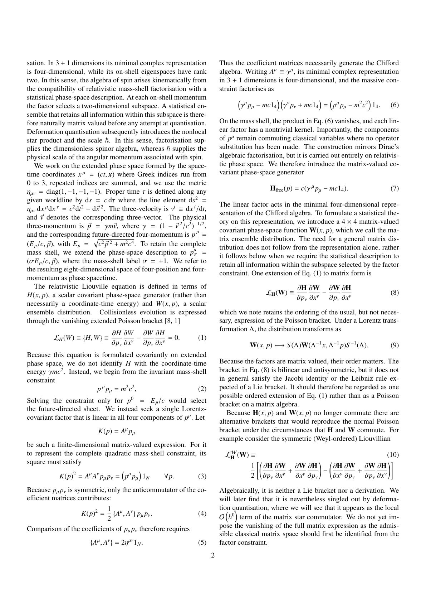
<figcaption class="paper-figure-caption"><b>Fig 1.</b> Low-resolution page preview, page 2</figcaption>
</figure>
<figure class="paper-figure-card">
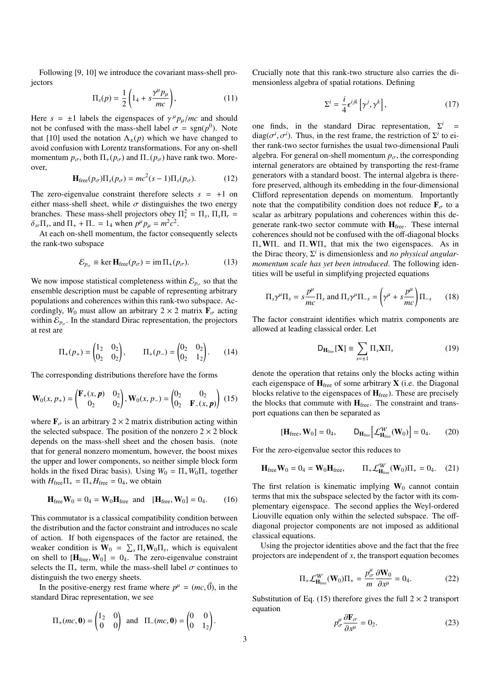
<figcaption class="paper-figure-caption"><b>Fig 2.</b> Low-resolution page preview, page 3</figcaption>
</figure>
<figure class="paper-figure-card">
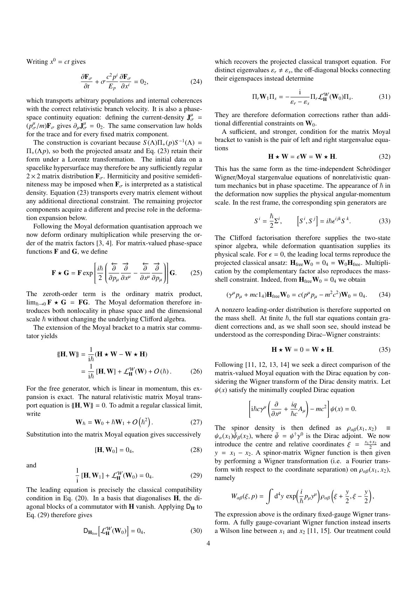
<figcaption class="paper-figure-caption"><b>Fig 3.</b> Low-resolution page preview, page 4</figcaption>
</figure>
<figure class="paper-figure-card">
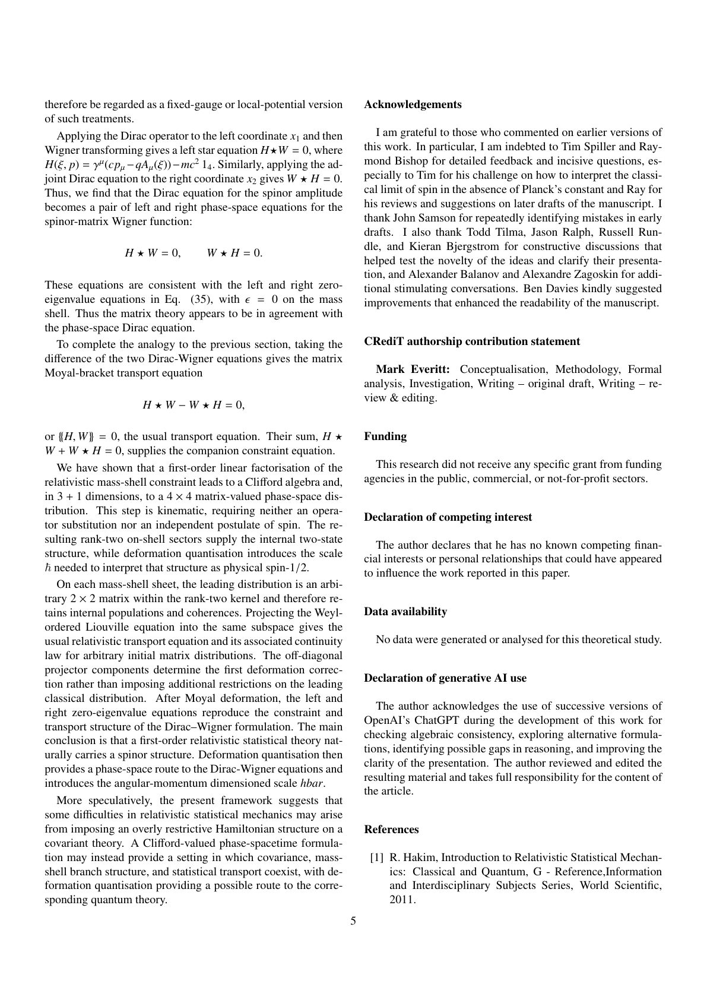
<figcaption class="paper-figure-caption"><b>Fig 4.</b> Low-resolution page preview, page 5</figcaption>
</figure>
<figure class="paper-figure-card">
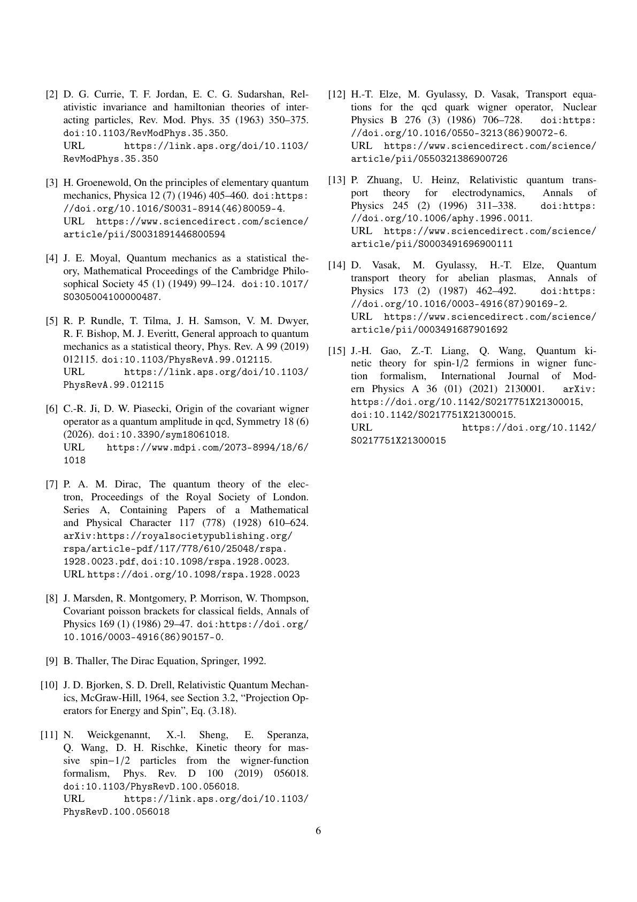
<figcaption class="paper-figure-caption"><b>Fig 5.</b> Low-resolution page preview, page 6</figcaption>
</figure>
</div>

<p><strong>Summary.</strong> This paper develops a covariant phase-space framework to investigate the origin of quantum spin in relativistic physics. By analyzing the constraints imposed by the relativistic mass-shell condition on the phase-space dynamics, the authors show that the underlying structure must obey a Clifford algebra. This formalism successfully derives the Dirac-Wigner equations, suggesting that spin structure can arise naturally from relativistic kinematics rather than being an imposed quantum postulate.</p>
<p><strong>Why it may be interesting.</strong> This work provides a deep theoretical link between fundamental symmetries (Lorentz covariance, mass-shell constraints) and quantum properties (spin), offering a non-standard, phase-space approach to quantum foundations that is relevant to advanced quantum field theory.</p>
<details>
<summary>Detailed structure</summary>
<p><strong>Main problem.</strong> The paper investigates whether the intrinsic spinor structure of spin-1/2 particles in relativistic quantum mechanics can emerge naturally from the compatibility between relativistic kinematics (mass-shell constraints) and covariant statistical phase-space dynamics.</p>
<p><strong>Main result.</strong> The requirement of a linear, covariant mass-shell factor forces the underlying algebraic structure to be a Clifford algebra, suggesting a non-quantum origin for spinor structure and providing a phase-space route to the Dirac-Wigner equations.</p>
<p><strong>Method.</strong> The authors employ covariant phase-space quantization techniques, projecting the Liouville equation onto the mass-shell subspace and utilizing the Moyal star product expansion to derive classical and quantum transport equations.</p>
<p><strong>Model / system.</strong> The model is relativistic quantum mechanics for spin-1/2 particles, described using a covariant classical phase-space distribution function $W$ constrained by the mass-shell condition $p_\mu p^\mu = m^2c^2$. The dynamics are governed by the Liouville equation.</p>
<p><strong>Key observables.</strong> The $2 	imes 2$ matrix-valued ensemble distribution $W(x, p)$, which retains internal populations and coherences, and the resulting transport equation $\partial_\mu J^\mu_\sigma = 0$.</p>
<p><strong>Important parameters / regimes.</strong> The reduced Planck constant ($\hbar$) acts as the scale converting the dimensionless internal algebra into physical angular momentum, while the mass $m$ sets the scale for the mass-shell constraint.</p>
<p><strong>Assumptions / limitations.</strong> The analysis assumes that the statistical description must be covariant and that the mass-shell constraint can be factorized linearly in momentum components.</p>
<p><strong>Paper structure.</strong> The paper establishes the problem by noting the difficulty of deriving spin classically. It then imposes the mass-shell constraint, forcing the coefficient matrices into a Clifford algebra. The dynamics are analyzed by projecting the Liouville equation into the resulting $2 	imes 2$ subspace, leading to the symmetric Liouvillian and ultimately reproducing the Dirac-Wigner equations via the Moyal star commutator.</p>
</details>
<details>
<summary>Abstract</summary>
<p>Spin is usually regarded as one of the most intrinsically quantum phenomena, while its lack of a natural analogue in classical physics presents an obstacle to phase-space deformation-quantisation accounts of its origin. We show that this difficulty may arise from imposing an overly restrictive scalar Hamiltonian structure on relativistic phase space. Requiring the complete massive mass-shell constraint to be represented by a single finite-dimensional expression that is linear in all four components of momentum forces its coefficient matrices to satisfy a Clifford algebra. The minimal complex representation of this algebra is four-dimensional. Requiring statistical completeness within the rank-two subspace selected by the mass-shell factor then leads to a four-by-four matrix-valued ensemble distribution. At each on-shell momentum, the linear mass-shell operator selects a two-dimensional subspace, so a general classical ensemble is described by a $2 \times 2$ matrix before quantisation. Projecting the Weyl-ordered Liouville equation into this subspace gives relativistic transport while preserving arbitrary populations and coherences and the remaining projector components determine the first deformation correction. Expansion of the matrix Moyal star commutator yields the symmetrised classical matrix Liouvillian at leading order. If the stronger two-sided star constraints are imposed, they reproduce the left and right Dirac-Wigner equations and introduce $\hbar$ as the scale converting the dimensionless internal algebra into physical angular momentum. These results suggest a non-quantum origin for spinor structure and a route to reconciling relativistic covariance, classical phase-space transport, and quantum spin.</p>
</details>
<p><sub><a href="#top">↑ back to top</a></sub></p>

<p><a id="paper-2608.29689"></a></p>
<h3 id="imaging-stars-at-the-quantum-compatibility-limit"><a href="http://arxiv.org/abs/2608.29689v1">Imaging Stars at the Quantum Compatibility Limit</a></h3>
<p><strong>Authors:</strong> Xinyao Guo, Haixing Miao, Zheng Cai, Huan Yang<br>
<strong>Type:</strong> theory · <strong>Category:</strong> other · <strong>PDF:</strong> <a href="https://arxiv.org/pdf/2608.29689v1">https://arxiv.org/pdf/2608.29689v1</a><br>
<strong>Analysis basis:</strong> full PDF text, analyzed in chunks
<strong>Topic relevance:</strong> <code>interference shaping light</code> <strong>3/5</strong> · <code>quantum measurements</code> <strong>3/5</strong></p>
<div class="figure-strip-hint">↔ Scroll figures horizontally</div>
<div class="paper-figures-scroll">
<figure class="paper-figure-card">
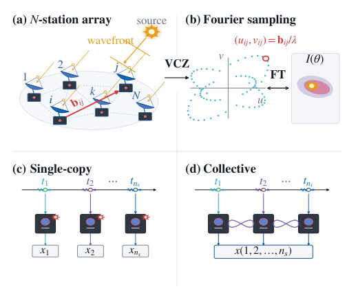
<figcaption class="paper-figure-caption"><b>Fig 1.</b> FIG. 1. Schematic of a nonlocal interferometric array for high- resolution imaging. Top: Physical picture of interferometric imaging, in which multiple baselines sample spatial-frequency components that jointly reconstruct the source. Bottom: Comparison of single-copy and collective measurements: for the former, quantum-state collapse happens for each copy with its time label, whereas the latter coherently processes multiple copies before a joint, time-unresolved collapse.</figcaption>
</figure>
<figure class="paper-figure-card">
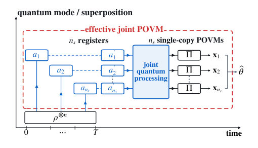
<figcaption class="paper-figure-caption"><b>Fig 2.</b> FIG. 2. Schematic illustration of time-unresolved measure- ment. Here, all the quantum operations in the red block ef- fectively serve as a joint measurement acting on ns undistin- guished copies of the quantum state.</figcaption>
</figure>
<figure class="paper-figure-card">
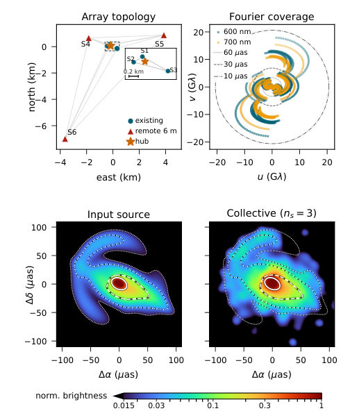
<figcaption class="paper-figure-caption"><b>Fig 3.</b> FIG. 3. Closure-space imaging test in a six-station long- baseline array. Top: Array geometry and Fourier coverage of the 6-station array. Bottom: Benchmark targeting source and the RML-reconstructed source with 3-copy collective mea- surement. Dashed and dotted curves mark equal-brightness contours of the input source overlaid on both image panels. Detailed pipeline of the RML reconstruction is supplemented in Appendix D.</figcaption>
</figure>
<figure class="paper-figure-card">
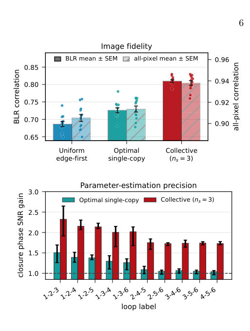
<figcaption class="paper-figure-caption"><b>Fig 4.</b> FIG. 4. Statistical improvement of collective-measurement- based nonlocal imaging. Top: Comparison of the imaging quality under different measurement schemes. Points repre- sents the correlation of individual imaging tests, while bars and error bars give the mean and standard error. Bottom: SNR gains for closure phase measurement relative to the uniform edge-first measurement scheme; bars give geometric means and whiskers indicate the 5–95% sample quantiles.</figcaption>
</figure>
<figure class="paper-figure-card">
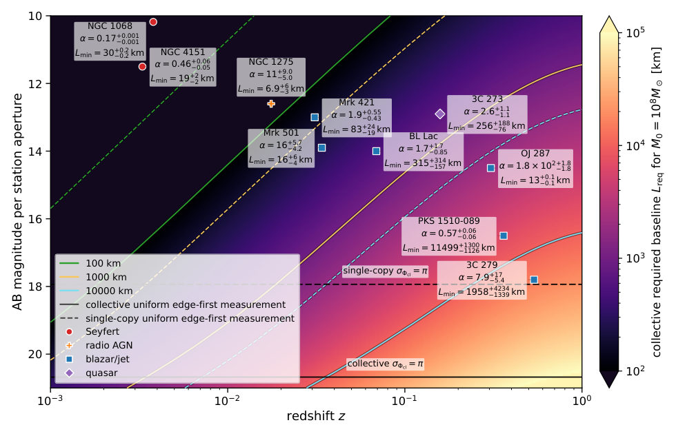
<figcaption class="paper-figure-caption"><b>Fig 5.</b> FIG. 5. Minimum required baseline length for resolving sources at the Schwarzschild-radius scale. The central black-hole masses adopted for the representative source markers are taken from Refs. [48–56]. Solid and dashed black lines denote the unity closure-SNR thresholds for single-copy measurement and collective measurement, respectively. For each readout strategy, the region below the corresponding threshold is inaccessible because the closure phases cannot be estimated with sufficient precision.</figcaption>
</figure>
</div>

<p><strong>Summary.</strong> This work tackles the quantum limits of imaging distant stars using large interferometers by analyzing the quantum estimation problem. It proves that single-copy measurements suffer from a fundamental array-size penalty, but collective measurements can coherently process data to achieve a significant O(sqrt(N)) improvement in signal-to-noise ratio. This suggests a path toward quantum-enhanced quantum-assisted interferometry for next-generation telescopes.</p>
<p><strong>Why it may be interesting.</strong> It provides a rigorous quantum information-theoretic framework for improving measurements in complex physical systems like interferometers, directly relating quantum measurement strategies to achievable astrophysical resolution.</p>
<details>
<summary>Detailed structure</summary>
<p><strong>Main problem.</strong> The paper addresses the fundamental quantum estimation limits for imaging astrophysical sources using multi-station interferometers, which is a multi-parameter quantum estimation problem.</p>
<p><strong>Main result.</strong> Collective measurements, which coherently process starlight across multiple time bins, remove the array-size penalty inherent in single-copy measurements, yielding an asymptotic O(sqrt(N)) enhancement in the visibility SNR.</p>
<p><strong>Method.</strong> The analysis uses Quantum and Classical Fisher Information Matrices to compare the performance bounds of single-copy versus collective quantum measurements.</p>
<p><strong>Model / system.</strong> The system is an N-station interferometric array observing weak thermal light from a remote astrophysical source, modeled in the weak-light regime.</p>
<p><strong>Key observables.</strong> Visibility estimators, directional-averaged SNR, Closure phase, and image reconstruction quality metrics (e.g., RMSE).</p>
<p><strong>Important parameters / regimes.</strong> Array size (N), number of independent measurements (n_s), and the asymptotic limit (n_s -&gt; infinity).</p>
<p><strong>Assumptions / limitations.</strong> The analysis assumes the weak-light regime and the feasibility of implementing a memory-assisted architecture for joint quantum readout.</p>
<p><strong>Figures summary.</strong> Figures schematically compare single-copy vs. collective measurements, and later show correlations and SNR gains for different receiver pipelines.</p>
<p><strong>Paper structure.</strong> The paper progresses from defining the quantum estimation problem in interferometry, deriving the performance bounds showing the incompatibility of single-copy measurements, proposing collective readout, and finally simulating the improvement using realistic astrophysical targets.</p>
</details>
<details>
<summary>Abstract</summary>
<p>Imaging astrophysical sources with a multi-station interferometer is intrinsically a multiparameter quantum-estimation problem. {Using tools from multiparameter quantum metrology,} we show that time-resolved repetitive or adaptive measurements in an \(N\)-station array suffer a fundamental array-level incompatibility among visibility estimators. Collective measurements, {which coherently process the received starlight across multiple time bins in a single joint readout}, remove the array-size penalty up to an order-unity factor, yielding an asymptotic \(O(\sqrt{N})\) enhancement for the {directional-averaged} SNR of visibility measurement. We then propose a memory-assisted interferometric architecture designed to implement collective readout through coherent storage and joint quantum processing. Imaging simulations and Fisher-information analyses demonstrate that collective measurements improve image reconstruction in near-term arrays and enhance the resolving power of future long-baseline architectures, with pronounced benefits for representative AGN targets such as NGC~4151 and 3C~273. These results highlight collective measurement as a promising building block for future quantum-assisted interferometric arrays for stellar imaging.</p>
</details>
<p><sub><a href="#top">↑ back to top</a></sub></p>

<p><a id="paper-2608.30308"></a></p>
<h3 id="indirect-stabilization-of-n-level-quantum-systems"><a href="http://arxiv.org/abs/2608.30308v1">Indirect stabilization of N -level quantum systems</a></h3>
<p><strong>Authors:</strong> Francesca Carlotta Chittaro<br>
<strong>Type:</strong> theory · <strong>Category:</strong> quantum information and computing · <strong>PDF:</strong> <a href="https://arxiv.org/pdf/2608.30308v1">https://arxiv.org/pdf/2608.30308v1</a><br>
<strong>Analysis basis:</strong> full PDF text, analyzed in chunks
<strong>Topic relevance:</strong> <code>methods for driven-dissipative</code> <strong>3/5</strong> · <code>correlated / nonlocal dissipation</code> <strong>1/5</strong> · <code>driven-dissipative phase transition</code> <strong>1/5</strong> · <code>quantum measurements</code> <strong>1/5</strong></p>
<div class="figure-strip-hint">↔ Scroll figures horizontally</div>
<div class="paper-figures-scroll">
<figure class="paper-figure-card">
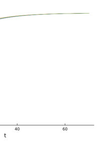
<figcaption class="paper-figure-caption"><b>Fig 1.</b> Figure 1: Fidelity F(trAρ(t), |ψ∗⟩⟨ψ∗|).</figcaption>
</figure>
</div>

<p><strong>Summary.</strong> This paper develops a theoretical framework to stabilize an N-level quantum system using an indirect control mechanism involving a noisy ancilla. By analyzing the dynamics in the coherence vector representation, the authors derive precise conditions for stability, particularly for the two-level case. The results are significant for quantum control, demonstrating how engineered dissipation can force a system into a specific, desired quantum state.</p>
<p><strong>Why it may be interesting.</strong> This work provides rigorous mathematical tools to design open quantum systems, showing how engineered dissipation can deterministically steer a complex quantum state towards a desired entangled or pure state, which is fundamental for quantum computation and quantum control.</p>
<details>
<summary>Detailed structure</summary>
<p><strong>Main problem.</strong> The paper theoretically characterizes the conditions required for achieving asymptotic stabilization of an N-level quantum system towards a desired pure state set using an indirect control architecture mediated by a noisy ancilla.</p>
<p><strong>Main result.</strong> For the two-level case (N=2), the authors derive a complete set of necessary and sufficient conditions for asymptotic stabilization, demonstrating convergence to a Bell state in a numerical example.</p>
<p><strong>Method.</strong> The analysis employs geometric methods on the space of density matrices, utilizing the coherence vector representation to transform the open quantum dynamics governed by the GKSL master equation into a linear system of differential equations.</p>
<p><strong>Model / system.</strong> The system is a bipartite quantum system $\mathcal{H} = \mathcal{H}_A \otimes \mathcal{H}_S$, where $S$ is the N-level system and $A$ is a noisy ancilla qubit. The evolution is described by the GKSL master equation.</p>
<p><strong>Key observables.</strong> The coherence vector $\mathbf{x}_
ho$, the fidelity $F(
ho, \sigma)$, and the existence of a unique, factorized equilibrium point are key diagnostics.</p>
<p><strong>Important parameters / regimes.</strong> The dimension N of the system, the structure of the coupling Hamiltonian $H_I$, and the properties of the noise operators $\ell_k$ are crucial parameters.</p>
<p><strong>Assumptions / limitations.</strong> The analysis assumes the dynamics are governed by the GKSL master equation and that the noise operators can be simultaneously triangularized for global stabilization.</p>
<p><strong>Figures summary.</strong> A figure demonstrates the temporal evolution of the fidelity across multiple random initial trajectories, showing clear convergence towards the target Bell state.</p>
<p><strong>Paper structure.</strong> The paper first outlines the general theoretical framework for arbitrary N, then focuses on the analytically tractable two-level case (N=2) to derive necessary and sufficient stability conditions, concluding with a numerical illustration.</p>
</details>
<details>
<summary>Abstract</summary>
<p>We study the stabilizability of a N -level quantum systems using an indirect control ar- chitecture mediated by a noisy ancilla. After outlining the general theoretical framework for arbitrary N , we focus on the two-level case (N = 2), for which we derive a complete set of necessary and sufficient conditions for asymptotic stability. Finally, we illustrate the analyti- cal results with a simple numerical example on a two-spin system, showing convergence to a Bell state for a set of random initial conditions.</p>
</details>
<p><sub><a href="#top">↑ back to top</a></sub></p>

<p><a id="paper-2608.28998"></a></p>
<h3 id="can-a-spin-liquid-state-persist-as-the-ground-state-in-the-presence-of-competing-interactions-and-disorder"><a href="http://arxiv.org/abs/2608.28998v1">Can a Spin Liquid State Persist as the Ground State in the Presence of Competing Interactions and Disorder?</a></h3>
<p><strong>Authors:</strong> Sumanta Mukherjee<br>
<strong>Type:</strong> theory · <strong>Category:</strong> disordered systems and neural networks · <strong>PDF:</strong> <a href="https://arxiv.org/pdf/2608.28998v1">https://arxiv.org/pdf/2608.28998v1</a><br>
<strong>Analysis basis:</strong> full PDF text, analyzed in chunks
<strong>Topic relevance:</strong> <code>analog quantum simulation</code> <strong>3/5</strong> · <code>Keldysh / 2PI / non-Gaussian methods</code> <strong>2/5</strong></p>
<div class="figure-strip-hint">↔ Scroll figures horizontally</div>
<div class="paper-figures-scroll">
<figure class="paper-figure-card">
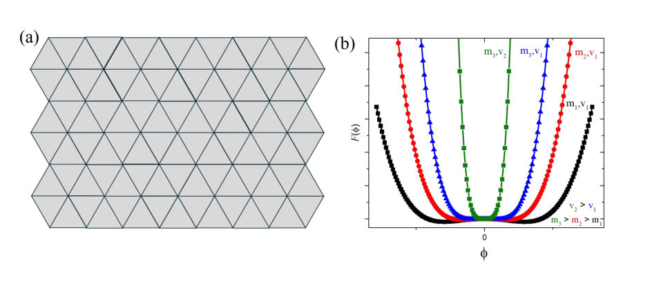
<figcaption class="paper-figure-caption"><b>Fig 1.</b> FIG. 1. (a) Schematic representation of the triangular lattice. (b) Systematic shift of the free-</figcaption>
</figure>
<figure class="paper-figure-card">
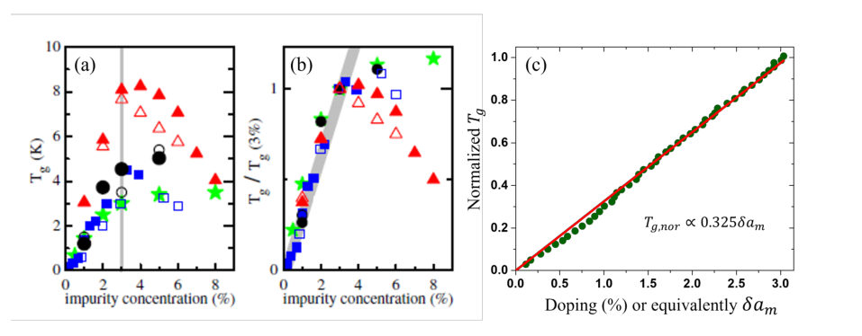
<figcaption class="paper-figure-caption"><b>Fig 2.</b> FIG. 2. Linear increase of the freezing temperature with increasing doping concentration in a</figcaption>
</figure>
</div>

<p><strong>Summary.</strong> This theoretical work examines the stability of spin liquid states in frustrated magnets under the influence of competing interactions and structural disorder. Using advanced field theory and the replica method, the authors show that disorder tends to suppress true long-range order, causing the system to enter a glassy state. This highlights the experimental difficulty in distinguishing genuine quantum spin liquids from disorder-induced glassy dynamics.</p>
<p><strong>Why it may be interesting.</strong> The interplay between frustration, disorder, and quantum fluctuations is central to understanding many exotic quantum phases, making the theoretical framework relevant for modeling complex many-body dynamics.</p>
<details>
<summary>Detailed structure</summary>
<p><strong>Main problem.</strong> The paper investigates whether a quantum spin liquid state can remain the ground state in a geometrically frustrated lattice when subjected to competing magnetic interactions and structural disorder.</p>
<p><strong>Main result.</strong> While competing interactions can induce order-by-disorder mechanisms, the presence of structural disorder drives the system towards a glassy state, which can mimic spin-liquid behavior but obscures the identification of true quantum spin liquids.</p>
<p><strong>Method.</strong> The analysis employs field-theoretical techniques, extending Ginzburg-Landau theory and utilizing the replica method to average over quenched structural disorder.</p>
<p><strong>Model / system.</strong> The model considers magnetic systems on frustrated lattices (like the triangular lattice) described by coupled order parameters ($\phi, \psi$) whose free energy functional is modified by both competing interactions and spatially random structural disorder.</p>
<p><strong>Key observables.</strong> The effective free energy functional ($F_{	ext{eff}}$), the glass transition temperature ($T_g$), and the stability of the ordered state ($\phi_0$).</p>
<p><strong>Important parameters / regimes.</strong> Interaction strengths ($g_{ij}$), disorder variance ($\Delta$), and the ratio of interaction energy to disorder strength.</p>
<p><strong>Assumptions / limitations.</strong> The analysis relies on the replica method and assumes the validity of a simplified phenomenological framework for the free energy functional.</p>
<p><strong>Figures summary.</strong> Figure 1 schematically shows the lattice and the shift of the free-energy minimum due to fluctuations. Figure 2 illustrates the linear increase of the freezing temperature ($T_g$) with doping concentration.</p>
<p><strong>Paper structure.</strong> The paper progresses from establishing the problem of competing interactions leading to fluctuation-driven order-by-disorder, to developing a field-theoretic approach incorporating disorder via the replica method, culminating in the prediction of a glassy ground state.</p>
</details>
<details>
<summary>Abstract</summary>
<p>In this report, we have shown that, in an otherwise geometrically frustrated lattice, the underlying interactions compete to stabilize different magnetic phases. In conjunction with fluctuations, these interactions may lead to the formation of unusual ordered phases, providing a pathway for understanding the fluctuation-driven order-by-disorder phenomenon. This competition is further modified by the presence of inherent structural disorder in a frustrated two-dimensional lattice. Furthermore, due to the local nature of the additional structural disorder, the majority of the samples evolve toward glassy dynamics, which can not only mimic spin-liquid-like behavior but also make it difficult to identify genuine spin-liquid candidates experimentally.</p>
</details>
<p><sub><a href="#top">↑ back to top</a></sub></p>

<p><a id="paper-2608.29323"></a></p>
<h3 id="experimental-observation-of-decoupled-spin-subsystems-in-decorated-square-kagome-lattice-magnets-of-the-nabokoite-family"><a href="http://arxiv.org/abs/2608.29323v1">Experimental observation of decoupled spin subsystems in decorated square kagomé lattice magnets of the nabokoite family</a></h3>
<p><strong>Authors:</strong> V. N. Glazkov, Ya V. Rebrov, M. A. Dubovitskii, M. M. Markina, A. F. Murtazoev, P. S. Berdonosov, A. N. Vasiliev<br>
<strong>Type:</strong> experiment · <strong>Category:</strong> strongly correlated electrons · <strong>PDF:</strong> <a href="https://arxiv.org/pdf/2608.29323v1">https://arxiv.org/pdf/2608.29323v1</a><br>
<strong>Analysis basis:</strong> full PDF text, analyzed in chunks
<strong>Topic relevance:</strong> <code>analog quantum simulation</code> <strong>3/5</strong> · <code>quantum measurements</code> <strong>2/5</strong></p>
<div class="figure-strip-hint">↔ Scroll figures horizontally</div>
<div class="paper-figures-scroll">
<figure class="paper-figure-card">
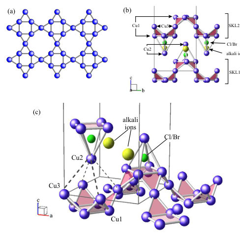
<figcaption class="paper-figure-caption"><b>Fig 1.</b> FIG. 1. (color online) (a) Scheme of the ideal 2D kagom´e lattice. (b) and (c) Fragments of the crystal structure of nabokoite family compounds ACu7(TeO4)(SO4)5X with high- lighted SKL layers. Only positions of copper, alkali and halo- gen ions are shown.</figcaption>
</figure>
<figure class="paper-figure-card">
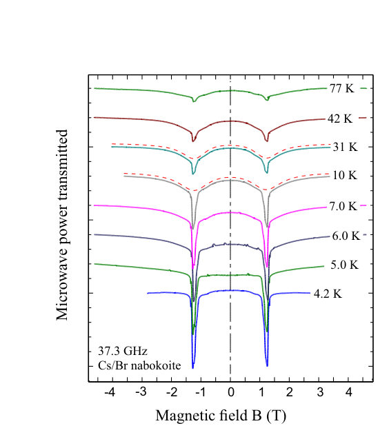
<figcaption class="paper-figure-caption"><b>Fig 2.</b> FIG. 2. (color online) Paramagnetic resonance absorp- tion spectra (bi-polar field sweep) for powder sample of CsCu7(TeO4)(SO4)5Br at different temperatures. Dashed curves show Lorentzian fits of 10 and 31 K data using Eqn. (1) (fits are shifted upwards for clarity).</figcaption>
</figure>
<figure class="paper-figure-card">
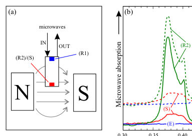
<figcaption class="paper-figure-caption"><b>Fig 3.</b> FIG. 3. (color online) (a) Sketch of the cavity and sample po- sitions at the calibration of paramagnetic centers absorption: (S) — nabokoite sample placed on the lower cavity wall (uni- form field of the magnet), (R1) — reference single-crystalline sample of CuSO4 · 5H2O placed on the upper cavity wall (stray field of the magnet), (R2) — reference powdered sam- ple of CuSO4 · 5H2O replacing the sample. (b) Comparison of the scaled EPR absorption spectra in calibration exper- iments with Rb/Br nabokoite (f = 11.4 GHz, T = 77 K, mS = 81.2 mg, mR2 = 5.5 mg): sample (S)+reference sam- ple (R1); powdered reference sample (R2) + reference sample (R1); no sample on the lower wall (E)+reference...</figcaption>
</figure>
<figure class="paper-figure-card">
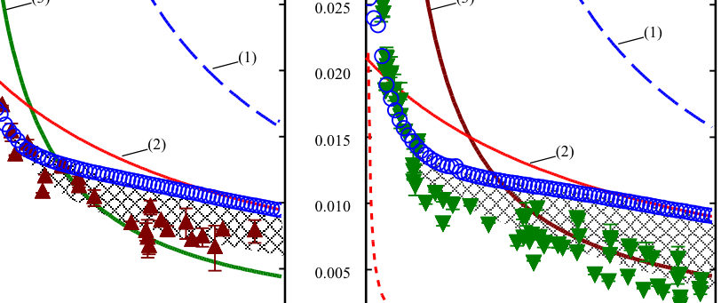
<figcaption class="paper-figure-caption"><b>Fig 4.</b> FIG. 4. (color online) Comparison of the static susceptibility χstatic (open circles) and recovered contribution of the EPR-active spins to the total static susceptibility χEPR (filled triangles). Panel (a) — data for Cs/Br nabokoite, panel (b) — data for Rb/Br nabokoite. Curves at both panels: (1) — Curie law for 7 spins S = 1/2, g = 2.2 per nabokoite molecule; (2) — Curie-Weiss law for 7 spins S = 1/2, g = 2.2 per nabokoite molecule and Curie-Weiss temperatures Θ = 130 K for Cs/Br nabokoite and 150 K for Rb/Br nabokoite; (3) — Curie law for 2 spins S = 1/2, g = 2.2 per nabokoite molecule; (4) — contribution of free paramagnetic centers (see Table II). Hatched areas highlight deficient...</figcaption>
</figure>
</div>

<p><strong>Summary.</strong> This work uses EPR spectroscopy on nabokoite magnets to probe the magnetic structure of the decorated square kagomé lattice. The key finding is the experimental evidence for two distinct, decoupled spin subsystems within the material. This challenges simple models of uniform exchange coupling in frustrated quantum magnets.</p>
<p><strong>Why it may be interesting.</strong> The observation of distinct, coexisting magnetic order (EPR-active) and potentially gapped/liquid dynamics (EPR-silent) within a single material provides a concrete experimental realization for studying spin-lattice decoupling in frustrated quantum magnets.</p>
<details>
<summary>Detailed structure</summary>
<p><strong>Main problem.</strong> The study investigates the complex magnetic exchange network and spin dynamics within the decorated square kagomé lattice (SKL) structure found in nabokoite-family magnets.</p>
<p><strong>Main result.</strong> The research demonstrates a dramatic splitting of the complex spin network into two virtually decoupled subsystems: one EPR-active and one EPR-silent, challenging conventional unified exchange models.</p>
<p><strong>Method.</strong> The primary method involves Electron Paramagnetic Resonance (EPR) spectroscopy, supplemented by static magnetic susceptibility measurements.</p>
<p><strong>Model / system.</strong> The physical system is the nabokoite-family compound, $ ext{ACu}_7( ext{TeO}_4)(    ext{SO}_4)_5    ext{X}$, which features 2D SKL layers decorated by interlayer spins, providing a platform for geometric frustration studies.</p>
<p><strong>Key observables.</strong> EPR absorption intensity and linewidth ($\Delta$), static magnetic susceptibility ($\chi$), and the antiferromagnetic ordering temperature ($T_N$).</p>
<p><strong>Important parameters / regimes.</strong> The fraction of EPR-active spins, the temperature dependence of the spin contributions, and the resonance field/linewidth values.</p>
<p><strong>Assumptions / limitations.</strong> The analysis assumes the Lorentzian shape for the EPR absorption profile and that the EPR-silent subsystem's behavior can be inferred from its vanishing contribution to the total susceptibility upon cooling.</p>
<p><strong>Figures summary.</strong> Figures illustrate the crystal structure of the SKL layers and show the temperature dependence of the EPR spectra, revealing distinct magnetic contributions.</p>
<p><strong>Paper structure.</strong> The paper proceeds by establishing the structural model (SKL), applying advanced EPR techniques to separate signal contributions, and then analyzing the temperature dependence of the magnetic observables to argue for the existence of decoupled spin subsystems.</p>
</details>
<details>
<summary>Abstract</summary>
<p>The square kagomé lattice (SKL) offers a model platform for investigating geometric frustration in 2D systems. Nabokoite-family compounds \nabok{A}{X} (A=Na, K, Cs, Rb and X=Cl, Br) extend this physics to a 3D network, where 2D SKL layers are decorated by interlayer spins. Using electron paramagnetic resonance (EPR), we demonstrate a dramatic splitting of this complex exchange network into two virtually decoupled spin subsystems: absolute calibration of the electron paramagnetic resonance (EPR) absorption reveals that only a fraction of all copper spins in nabokoites is EPR-active and this fraction of the spins orders at the Néel point. Comparison of the EPR absorption and static susceptibility indicates that contribution of the EPR-silent spin subsystem to total magnetic susceptibility decreases on cooling. This direct observation of coexisting magnetic order and possible spin-liquid dynamics within a single compound challenges conventional models of unified exchange networks in decorated frustrated lattices.</p>
</details>
<p><sub><a href="#top">↑ back to top</a></sub></p>

<p><a id="paper-2608.29756"></a></p>
<h3 id="pathwise-random-hamiltonian-simulation"><a href="http://arxiv.org/abs/2608.29756v1">Pathwise Random Hamiltonian Simulation</a></h3>
<p><strong>Authors:</strong> Davide Cugini<br>
<strong>Type:</strong> theory · <strong>Category:</strong> quantum information and computing · <strong>PDF:</strong> <a href="https://arxiv.org/pdf/2608.29756v1">https://arxiv.org/pdf/2608.29756v1</a><br>
<strong>Analysis basis:</strong> full PDF text, analyzed in chunks
<strong>Topic relevance:</strong> <code>analog quantum simulation</code> <strong>3/5</strong> · <code>methods for driven-dissipative</code> <strong>2/5</strong></p>
<div class="figure-strip-hint">↔ Scroll figures horizontally</div>
<div class="paper-figures-scroll">
<figure class="paper-figure-card">
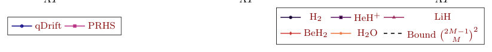
<figcaption class="paper-figure-caption"><b>Fig 1.</b> FIG. 1: Comparison between qDrift and PRHS (N = 1) for the five molecular Hamiltonians introduced in the text. The first 5 panels show the trace-distance error achieved by qDrift (blue) and by PRHS (purple) as a function of ΛT, at matched query cost Crun; the black dashed horizontal line marks the target accuracy ϵ = 10−1 used to select, for each ΛT, the smallest M meeting this target. Shaded background regions, and the labels along the upper horizontal axis, indicate the resulting order M, which, following from the bias bound of Eq. (7) evaluated at N = 1, depends on ΛT alone and is therefore common to all five molecules. The last panel reports the corresponding sampling overhead ∥qM∥2 1,...</figcaption>
</figure>
</div>

<p><strong>Summary.</strong> This paper introduces Pathwise Random Hamiltonian Simulation (PRHS), an advanced quantum algorithm designed to simulate time evolution $e^{-iHt}$ with higher accuracy than existing methods like qDrift. By structuring the time evolution into correlated slices, PRHS achieves an error scaling that is superior to polynomial bounds in the high-precision limit. This offers a significant algorithmic advantage for simulating complex quantum systems like molecules.</p>
<p><strong>Why it may be interesting.</strong> This work provides a concrete, resource-aware quantum algorithm improvement for simulating quantum dynamics, directly impacting the feasibility of simulating complex molecular Hamiltonians on near-term quantum hardware.</p>
<details>
<summary>Detailed structure</summary>
<p><strong>Main problem.</strong> The paper addresses the challenge of efficiently approximating the time-evolution operator $U(t) = e^{-iHt}$ for quantum systems.</p>
<p><strong>Main result.</strong> The proposed Pathwise Random Hamiltonian Simulation (PRHS) protocol achieves arbitrary order of accuracy, outperforming the standard qDrift protocol in the high-precision regime by achieving a query cost that grows slower than any power of $1/\epsilon$.</p>
<p><strong>Method.</strong> PRHS extends qDrift by subdividing each time step into $M$ correlated slices, utilizing a specially constructed quasi-probability distribution to achieve higher-order error control.</p>
<p><strong>Model / system.</strong> The simulation targets quantum systems governed by a Hamiltonian $H = \sum_{\gamma=1}^{\Gamma} \lambda_\gamma H_\gamma$, whose evolution is analyzed using the Liouvillian formalism.</p>
<p><strong>Key observables.</strong> Trace Distance Error ($\epsilon$), Query Cost ($C_{run} = NM$), and Total Cost ($C(N, M)$).</p>
<p><strong>Important parameters / regimes.</strong> Target accuracy $\epsilon$, total evolution time $T$, and the coupling strength parameter $\Lambda$.</p>
<p><strong>Assumptions / limitations.</strong> The analysis compares PRHS against Trotter–Suzuki decompositions and assumes the ability to optimize jointly over the number of slices $M$ and independent blocks $N$.</p>
<p><strong>Figures summary.</strong> Figures compare the trace distance error between qDrift and PRHS for molecular Hamiltonians, showing PRHS achieving significantly lower error at matched query costs in the high-precision regime.</p>
<p><strong>Paper structure.</strong> The paper introduces PRHS as an extension of qDrift, derives error bounds showing factorial decay in $M$, and then performs an optimization analysis to find the optimal $(N, M)$ pair that minimizes the total resource cost for fixed accuracy $\epsilon$.</p>
</details>
<details>
<summary>Abstract</summary>
<p>Randomized product formulas such as qDrift offer a resource-efficient alternative to deterministic Trotter--Suzuki decompositions for Hamiltonian simulation, removing their polynomial dependence on the number of Hamiltonian terms. qDrift, however, is intrinsically limited to first order in the evolution time, so its query complexity remains linear in the inverse of the target accuracy, $1/ε$. We introduce Pathwise Random Hamiltonian Simulation (PRHS), which extends qDrift to arbitrary order by subdividing each time step into $M$ correlated slices, each evolving under a term sampled from a quasi-probability distribution that we construct in closed form and prove unique, with a bias decaying factorially in $M$. Optimizing jointly over the number of slices $M$ and the number of independent blocks $N$ interpolates between the standard qDrift protocol at long times and a high-precision regime where the query cost grows slower than any power of $1/ε$, without requiring ancillary qubits. Numerical simulations of five molecular Hamiltonians confirm this advantage, with PRHS achieving accuracies two to four orders of magnitude beyond qDrift at equal query cost.</p>
</details>
<p><sub><a href="#top">↑ back to top</a></sub></p>

<p><a id="paper-2608.28879"></a></p>
<h3 id="strongly-coupled-quark-matter-in-neutron-stars-and-their-mergers"><a href="http://arxiv.org/abs/2608.28879v1">Strongly coupled quark matter in neutron stars and their mergers</a></h3>
<p><strong>Authors:</strong> Konstantin Maslov, Ralf Rapp, Joaquin Grefa, Veronica Dexheimer, Claudia Ratti<br>
<strong>Type:</strong> theory · <strong>Category:</strong> statistical mechanics · <strong>PDF:</strong> <a href="https://arxiv.org/pdf/2608.28879v1">https://arxiv.org/pdf/2608.28879v1</a><br>
<strong>Analysis basis:</strong> full PDF text, analyzed in chunks
<strong>Topic relevance:</strong> <code>Keldysh / 2PI / non-Gaussian methods</code> <strong>3/5</strong> · <code>analog quantum simulation</code> <strong>1/5</strong> · <code>methods for driven-dissipative</code> <strong>1/5</strong></p>
<div class="figure-strip-hint">↔ Scroll figures horizontally</div>
<div class="paper-figures-scroll">
<figure class="paper-figure-card">
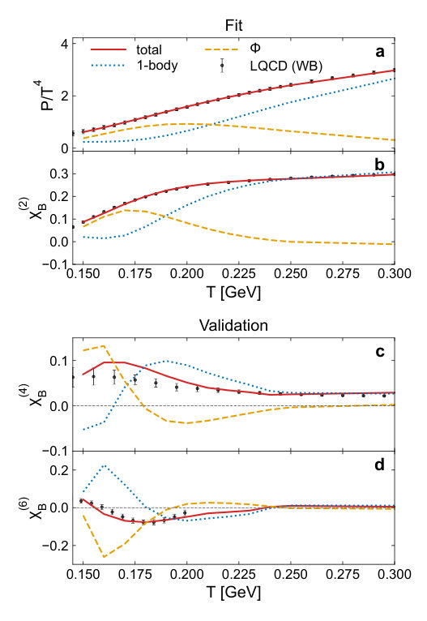
<figcaption class="paper-figure-caption"><b>Fig 1.</b> Figure 1: Calibration against lQCD thermodynamics at µB = 0. a, Pressure P/T4. b–d, Baryon-charge suscepti-</figcaption>
</figure>
<figure class="paper-figure-card">
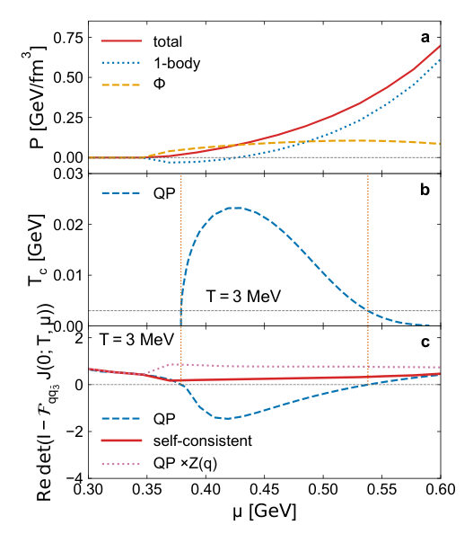
<figcaption class="paper-figure-caption"><b>Fig 2.</b> Figure 2: Suppression of the pairing instability in the self-consistent calculation. a, Total pressure (solid) at T = 3 MeV and its decomposition into the 1-body (dotted) and correlation (dashed) contributions as functions of µ. b, Critical temperature for diquark condensation in the QP approximation as a function of µ. The horizontal dashed line marks T = 3 MeV, the temperature of the upper and lower panels. c, Thouless determinant as a function of chemical potential for the self-consistent calculation (thick solid line), the same QP approximation as in the middle panel (dashed line), and the QP approximation including the QP residue Z(q) (dotted line, see Methods).</figcaption>
</figure>
<figure class="paper-figure-card">
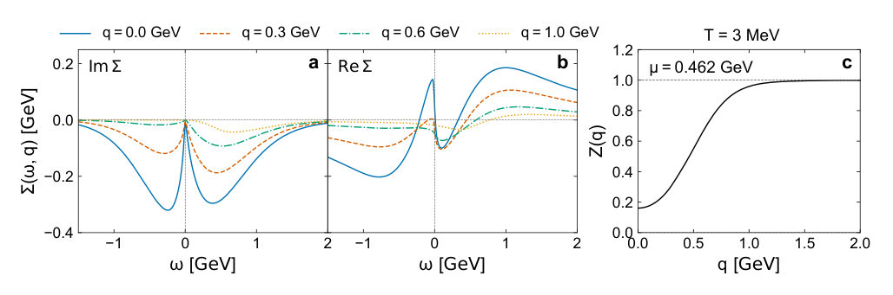
<figcaption class="paper-figure-caption"><b>Fig 3.</b> Figure 3: Self-energies and the depletion of QP weight. a, Imaginary and b, Real parts of the retarded quark self-energy Σ(q, ω) at T = 3 MeV and µ = 0.462 GeV as functions of the frequency (relative to the Fermi level) for several momenta. The imaginary part exhibits the Fermi-liquid suppression Im Σ ∼ω2 at the Fermi level ω = 0, accompanied by broad structures on the particle and hole sides. These structures induce a steep negative slope of Re Σ at ω = 0, which determines the QP residue. c, QP residue Z(q) (Eq. (8)), showing the reduction to Z ≃0.15 at low momenta.</figcaption>
</figure>
<figure class="paper-figure-card">
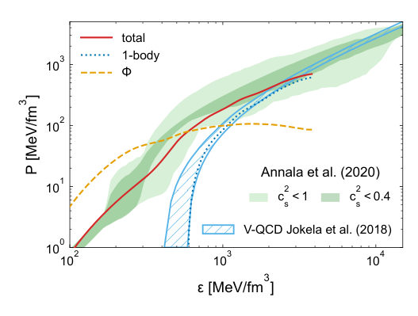
<figcaption class="paper-figure-caption"><b>Fig 4.</b> Figure 4: EoS of cold quark matter against astrophys- ical constraints. Total pressure of charge-neutral beta- equilibrated matter at T = 3 MeV (solid line) and its decomposition into the 1-body (dotted line) and Luttinger– Ward Φ (dashed line) contributions. The 1-body contri- bution is negative below ε ≃0.6 GeV/ fm3 and is not displayed in the logarithmic scale. The green band shows the model-independent region consistent with causality (c2 s ≤1) and astrophysical constraints42, and the blue hatched band shows the V-QCD calculation43 with its un- certainty.</figcaption>
</figure>
</div>

<p><strong>Summary.</strong> This paper applies advanced quantum many-body theory to model strongly coupled quark matter under the extreme conditions of neutron stars. By extending insights from heavy-ion collisions, the authors predict that the matter in these compact objects is best described as a strongly coupled diquark liquid. The results provide a theoretically consistent Equation of State that aligns with astrophysical observations.</p>
<p><strong>Why it may be interesting.</strong> While focused on QCD, the use of advanced many-body techniques (T-matrix, self-energy calculations) to determine phase structure and thermodynamic stability in a strongly interacting system shares conceptual overlap with modeling correlated quantum fluids or strongly interacting fermionic systems.</p>
<details>
<summary>Detailed structure</summary>
<p><strong>Main problem.</strong> The study investigates the properties of strongly coupled quark matter, originally observed in heavy-ion collisions, when subjected to the extreme conditions of high baryon density and low temperature found in neutron stars and their mergers.</p>
<p><strong>Main result.</strong> The research predicts that under neutron star merger conditions, a strongly coupled diquark liquid prevails in the thermodynamics, and the resulting Equation of State is consistent with current observational constraints on neutron stars.</p>
<p><strong>Method.</strong> The authors employ quantum many-body theory, specifically utilizing the self-consistent T-matrix approach derived from the Luttinger-Ward-Baym formalism to calculate thermodynamic potentials.</p>
<p><strong>Model / system.</strong> The system modeled is Quantum Chromodynamics (QCD) matter, treating quark-gluon plasma at varying temperatures and baryon chemical potentials. The calculations incorporate interactions via a separable T-matrix approximation.</p>
<p><strong>Key observables.</strong> Equation of State (EoS), baryon-number susceptibilities ($\chi_B^{(n)}$), quark pairing instabilities (diquark formation), and the quark self-energy $\Sigma(\omega, p)$.</p>
<p><strong>Important parameters / regimes.</strong> High baryon density ($\mu_B$), low temperature ($T \approx 3$ MeV), and the comparison to lattice QCD results at $\mu_B=0$.</p>
<p><strong>Assumptions / limitations.</strong> The calculations rely on the T-matrix resummation technique and the use of a separable interaction model, with the applicability in intermediate density regimes being a noted limitation.</p>
<p><strong>Figures summary.</strong> Figures illustrate the calibration of susceptibilities against lattice QCD data, the decomposition of pressure into 1-body and correlation contributions, and the analysis of the Thouless determinant to assess diquark condensation.</p>
<p><strong>Paper structure.</strong> The paper progresses by first establishing the theoretical framework using the T-matrix approach to calculate thermodynamic quantities. It then applies this framework to extrapolate known high-temperature sQGP physics to the high-density, low-temperature regime relevant for compact objects, culminating in EoS predictions.</p>
</details>
<details>
<summary>Abstract</summary>
<p>The discovery of the strongly-coupled quark-gluon plasma (sQGP) in high-energy heavy-ion collisions has revealed remarkable properties of matter at high temperature, with transport coefficients close to conjectured bounds from quantum field theory at strong coupling. The high sQGP collision rates imply very large energy uncertainties and the melting of quasiparticle structures. Deploying quantum many-body theory based on the self-consistent $T$-matrix approach for the sQGP at high temperature, we investigate its manifestation at high baryon density and low temperature, as present in neutron stars and their mergers. We constrain the chemical-potential dependence of the quark interaction kernel using first-principles information from Quantum Chromodynamics on baryon-number susceptibilities. Very large collisional widths persist at large density and are found to relegate superconducting phases to rather small temperatures. Instead, a strongly coupled diquark liquid prevails in the thermodynamics under the conditions relevant to neutron-star mergers. At lower densities, the diquarks take over from the single-quark contributions, suggesting a pathway toward hadronization. Our results are consistent with observational constraints on the equation of state of neutron stars, corroborating the presence of strongly coupled quark matter in the interior of these objects.</p>
</details>
<p><sub><a href="#top">↑ back to top</a></sub></p>

<p><a id="paper-2608.29330"></a></p>
<h3 id="collinear-and-noncollinear-antiferromagnetic-ordering-in-a-highly-frustrated-decorated-square-kagome-lattice-antiferromagnets-of-the-nabokoite-family"><a href="http://arxiv.org/abs/2608.29330v1">Collinear and noncollinear antiferromagnetic ordering in a highly frustrated decorated square kagomé lattice antiferromagnets of the nabokoite family</a></h3>
<p><strong>Authors:</strong> V. N. Glazkov, Ya V. Rebrov, M. A. Dubovitskii, M. M. Markina, K. V. Zakharov, A. F. Murtazoev, P. S. Berdonosov, A. N. Vasiliev<br>
<strong>Type:</strong> both · <strong>Category:</strong> strongly correlated electrons · <strong>PDF:</strong> <a href="https://arxiv.org/pdf/2608.29330v1">https://arxiv.org/pdf/2608.29330v1</a><br>
<strong>Analysis basis:</strong> full PDF text, analyzed in chunks
<strong>Topic relevance:</strong> <code>analog quantum simulation</code> <strong>3/5</strong> · <code>quantum measurements</code> <strong>1/5</strong></p>
<div class="figure-strip-hint">↔ Scroll figures horizontally</div>
<div class="paper-figures-scroll">
<figure class="paper-figure-card">
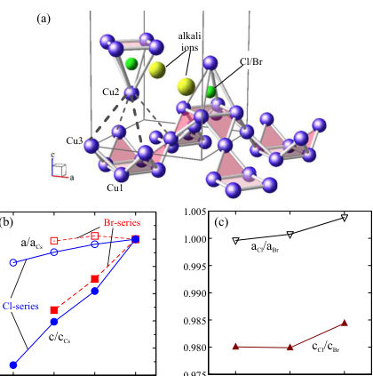
<figcaption class="paper-figure-caption"><b>Fig 1.</b> FIG. 1. (color online) (a) Fragment of nabokoite crystal structure. Only copper, halogen and alkali ions positions are shown. (b) Nabokoites lattice constants normed to the cor- responding constants for Cs/Cl or Cs/Br-compounds. Open symbols — a/aCs, closed symbols — c/cCs. Circles (solid lines) — chlorine series of compounds, squares (dashed lines) — bromine series of compounds. (c) Ratios of the lattice con- stants for the chlorine and bromine nabokoite series. Open symbols — a, closed symbols c.</figcaption>
</figure>
<figure class="paper-figure-card">
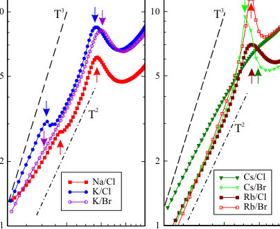
<figcaption class="paper-figure-caption"><b>Fig 2.</b> FIG. 2. (color online) Low-temperature specific heat curves Cp(T) for nabokoite family compounds ACu7(TeO4)(SO4)5X (A=Na, K, Cs, Rb; X=Cl, Br). Left panel: light-alkali- ion nabokoites (A=Na, K). Right panel: heavy-alkali-ion nabokoites (A=Rb, Cs). Vertical arrows marks positions of specific heat peaks corresponding to the low-temperature phase transitions (see Table I). Dashed and dash-dotted lines correspond to T 3 and T 2 dependences expected for 3D and 2D Heisenberg antiferromagnets, correspondingly.</figcaption>
</figure>
<figure class="paper-figure-card">
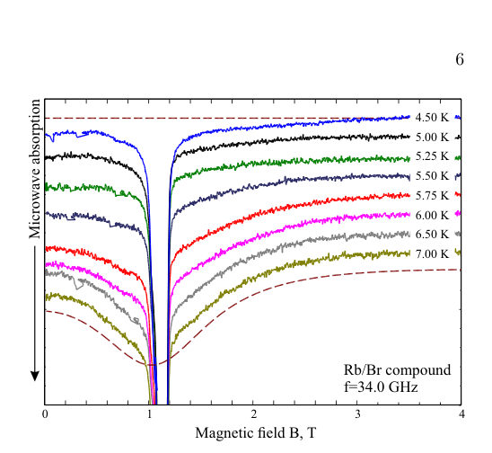
<figcaption class="paper-figure-caption"><b>Fig 3.</b> FIG. 4. (color online) Temperature evolution of the elec- tron spin resonance absorption in the powder sample of RbCu7(TeO4)(SO4)5Br at f = 34.0 GHz. Dashed curve close to the 7.0 K absorption spectrum is a Lorentzian fit of the ESR absorption line above the N´eel point, curve is shifted for clar- ity. Horizontal dashed line over the 4.5 K absorption shows “no absorption” level to highlight broad absorption band at low fields appearing below the N´eel point. Narrow absorption signal at 1.0...1.2 T is a paramagnetic resonance response from a small amount (about 1% per copper ion of nabokoite) of free paramagnetic centers [24].</figcaption>
</figure>
<figure class="paper-figure-card">
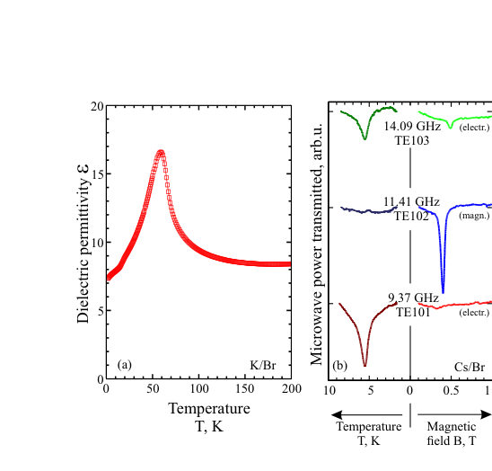
<figcaption class="paper-figure-caption"><b>Fig 4.</b> FIG. 3. (color online) (a) Temperature dependence of the dielectric permittivity ε for KCu7(TeO4)(SO4)5Br. Exper- iment frequency f = 10 kHz. (b) Magnetic resonance at T = 1.7 K (right horizontal semi-axis) and “temperature resonance” at B = 0 (left horizontal semi-axis) demonstrat- ing low-temperature dielectric absorption at magnetic phase transition for CsCu7(TeO4)(SO4)5Br. Sample is placed in the geometrical center of the rectangular microwave cavity, “(electr.)” and “(magn.)” notes mark experiments with the sample positioned in the maximum of microwave electric and magnetic field correspondingly.</figcaption>
</figure>
<figure class="paper-figure-card">
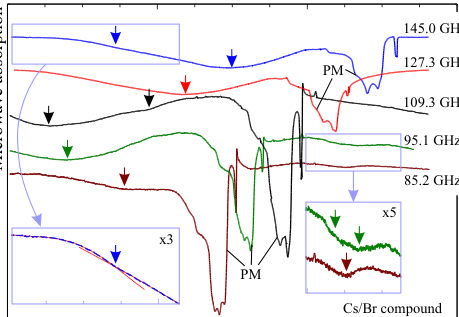
<figcaption class="paper-figure-caption"><b>Fig 5.</b> FIG. 5. (color online) Examples of antiferromag- netic resonance absorption spectra in powder sample of CsCu7(TeO4)(SO4)5Br at high microwave frequencies f &gt; 80 GHz, T = 1.7 K. Vertical arrows marks positions of the observed absorption features: edges of absorption bands or absorption maxima. Irregularly shaped absorption labeled ’PM’ corresponds to the resonance of free paramagnetic cen- ters (about 1% per copper ion of nabokoite). Narrow absorp- tion to the right from ’PM’ absorption is a DPPH marker (g = 2.00). Insets show magnified fragments of absorption spectra to highlight weak features. Left inset highlights weak kink marking right edge of absorption, red curves are empir- ical...</figcaption>
</figure>
</div>

<p><strong>Summary.</strong> This paper investigates the magnetic ordering in frustrated nabokoite compounds, finding a qualitative difference in the ground state based on the alkali metal ion used. By combining ESR, thermodynamics, and structural analysis, the authors distinguish between conventional collinear and complex noncollinear magnetic patterns. The work highlights how subtle changes in chemical composition can fundamentally alter the magnetic quantum ground state of these frustrated materials.</p>
<p><strong>Why it may be interesting.</strong> The interplay between structural transitions (ferroelectric) and magnetic ordering in frustrated lattices provides a rich platform for studying quantum phase transitions and emergent magnetic ground states.</p>
<details>
<summary>Detailed structure</summary>
<p><strong>Main problem.</strong> The study investigates the nature of magnetic ordering (collinear vs. noncollinear) in highly frustrated antiferromagnets.</p>
<p><strong>Main result.</strong> The magnetic ordering pattern in nabokoite compounds is qualitatively different depending on whether light- or heavy-alkali-ions are present, suggesting the structural/electronic environment dictates the ground state.</p>
<p><strong>Method.</strong> The research combines multi-frequency electron spin resonance spectroscopy, thermodynamic measurements (specific heat, magnetization), and finite-size cluster modeling.</p>
<p><strong>Model / system.</strong> The system is the nabokoite family of compounds, $  ext{ACu}_7( ext{TeO}_4)(    ext{SO}_4)_5    ext{X}$, which feature frustrated 2D square kagomé lattice layers.</p>
<p><strong>Key observables.</strong> Antiferromagnetic resonance modes, specific heat anomalies, magnetization curves, and dielectric permittivity transitions.</p>
<p><strong>Important parameters / regimes.</strong> The choice of alkali ion (light vs. heavy) and the critical closeness of exchange coupling parameters to quantum ground state boundaries.</p>
<p><strong>Assumptions / limitations.</strong> The choice of ordering pattern is hypothesized to be pre-determined by high-temperature dielectric transitions, and modeling relies on averaging over random powder orientations.</p>
<p><strong>Figures summary.</strong> Figures illustrate crystal structure, lattice constant ratios, and show characteristic AFMR patterns and specific heat/dielectric anomalies marking phase transitions.</p>
<p><strong>Paper structure.</strong> The paper systematically compares magnetic behavior across different alkali-ion subfamilies, using multiple experimental techniques to characterize the transition from frustrated states to either collinear or noncollinear magnetic order.</p>
</details>
<details>
<summary>Abstract</summary>
<p>Nabokoite family compounds ACu$_7$(TeO$_4$)(SO4)$_5$X (A=Na, K, Rb, Cs; X=Cl, Br) host frustrated 2D square kagom'{e} lattice layers decorated by additional inter-layer magnetic ions. We study magnetic order in nabokoites with multi-frequency electron spin resonance spectroscopy and thermodynamic measurement (specific heat, magnetization and dielectric permittivity). Our study reveals that the choice of the low-temperature ground state is qualitatively different in light-alkali-ion (K, Na) and heavy-alkali-ion (Rb, Cs) compounds. Heavy-alkali-ion nabokoites order in conventional collinear antiferromagnetic pattern with easy-axis anisotropy. The parameters of the ordered antiferromagnetic state are very close for all heavy-alkali-ion subfamily. Light-alkali-ion members of nabokoite family demonstrate much more complicated route to the ordered state: firstly, a ferroelectric transition at 25-90K lifts the frustration and thus pre-cooks the low-temperature ordering; secondly, an unusual noncollinear magnetic order develops via two-step phase transition with first transition temperature $T_{c1}\simeq 5-6$K and the second transition at $T_{c2}\simeq 3-4$K. Noncollinear order is evidenced by observation of characteristic non-Larmor antiferromagnetic resonance mode. Spin dynamics of light-alkali-ion nabokoites is characterized by three zero-field magnon gaps and two spin-reorientation fields, the values of magnon gaps and critical fields are quite different for different compounds. The finite-size cluster modeling of pyramidal structural block of nabokoite structure combined suggests that the critical closeness of the nabokoite exchange coupling parameters to the border-line between the different quantum ground state of pyramidal building block of nabokoite structure could be the clue to the choice of qualitatively different ordered state in light- and heavy-alkali-ion nabokoites.</p>
</details>
<p><sub><a href="#top">↑ back to top</a></sub></p>

<p><a id="paper-2608.29142"></a></p>
<h3 id="evolving-charge-order-in-the-cdw-state-of-avmath625mathsbmath626math-metals"><a href="http://arxiv.org/abs/2608.29142v1">Evolving charge order in the CDW state of AV$_3$Sb$_5$ metals</a></h3>
<p><strong>Authors:</strong> Anshu Kataria, Francis Pratt, Peter J. Baker, Stephen Cottrell, Miki Bonacci, Andrea Capa Salinas, Stephen D. Wilson, Zurab Guguchia, Samuele Sanna, Pietro Bonfà<br>
<strong>Type:</strong> experiment · <strong>Category:</strong> strongly correlated electrons · <strong>PDF:</strong> <a href="https://arxiv.org/pdf/2608.29142v1">https://arxiv.org/pdf/2608.29142v1</a><br>
<strong>Analysis basis:</strong> full PDF text, analyzed in chunks
<strong>Topic relevance:</strong> <code>quantum measurements</code> <strong>3/5</strong> · <code>Frenkel-Kontorova</code> <strong>1/5</strong></p>
<div class="figure-strip-hint">↔ Scroll figures horizontally</div>
<div class="paper-figures-scroll">
<figure class="paper-figure-card">
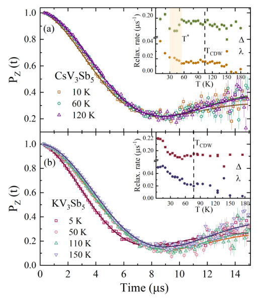
<figcaption class="paper-figure-caption"><b>Fig 1.</b> FIG. 1. ZF muon asymmetry, normalized to one, for (a) CsV3Sb5 and (b) KV3Sb5 at different temperatures. Data in panel (a) are from [54]. The solid lines are best fit to the Eq. 1. The insets show the relaxation rates, ∆and λ, as a function of the temperature. The dashed vertical lines in the insets represent the CDW transitions and the shaded re- gion for CsV3Sb5 represents the temperature range over which the relaxation varies and anomalies are observed in ALC measurements.</figcaption>
</figure>
<figure class="paper-figure-card">
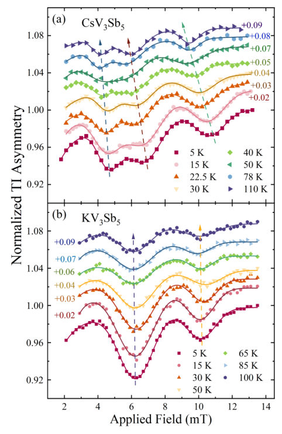
<figcaption class="paper-figure-caption"><b>Fig 2.</b> FIG. 2. Normalized TI asymmetry variation with applied field at different temperatures up to above the TCDW for (a) CsV3Sb5 and (b) KV3Sb5. Temperature-dependent resonance spectra are vertically shifted by the amounts reported in the picture for clarity. The solid colored lines represent the best fit using Eq. 2. The dashed arrow lines are guides to the eye to showcase the variation of resonance fields with increasing temperature.</figcaption>
</figure>
<figure class="paper-figure-card">
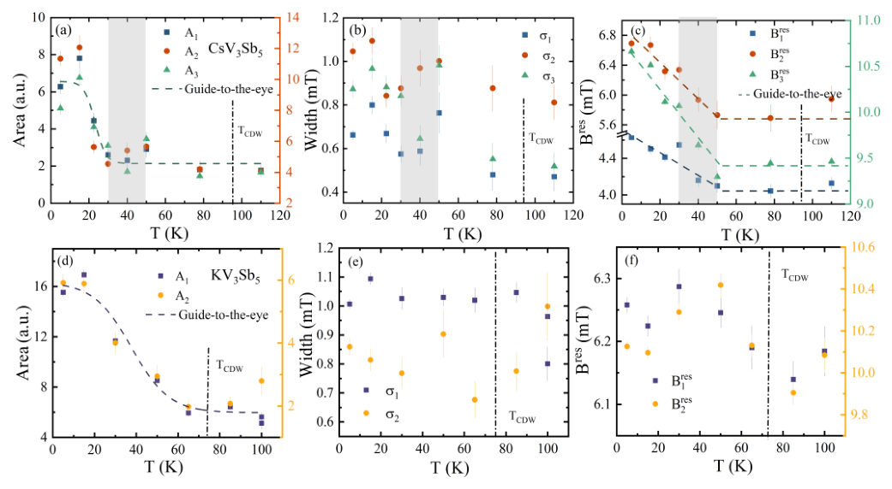
<figcaption class="paper-figure-caption"><b>Fig 3.</b> FIG. 3. The top panel shows the temperature dependence of the fitting parameter for the CsV3Sb5 system, (a) area (b) width and (c) resonant field of three resonances. The bottom panel presents the same fitting parameters for KV3Sb5 system. The dashed lines, color coded according to the respective parameters, serve as guide-to-the-eye for visualizing their temperature-dependent evolution. The vertical black dot-dashed line indicates the CDW transition temperature, TCDW. Finally, the shaded region in panels (a-c) corresponds to the temperature range where anomalies are observed in both ZF and ALC µSR measurement.</figcaption>
</figure>
<figure class="paper-figure-card">
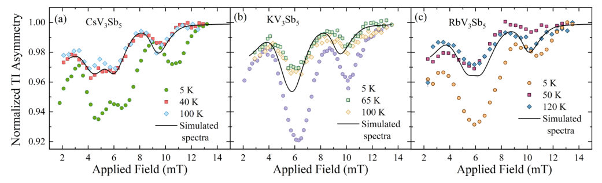
<figcaption class="paper-figure-caption"><b>Fig 4.</b> FIG. 4. Experimental and simulated ALC-µSR spectra, considering the cluster of the nearest Sb atom and other six nearest V atoms (see SM) roughly forming a hexagon around the muon stopping site for (a) CsV3Sb5, (b) KV3Sb5 and (c) RbV3Sb5 (data from [53]). The y-axis represents the (normalized) time-integrated asymmetry.</figcaption>
</figure>
<figure class="paper-figure-card">
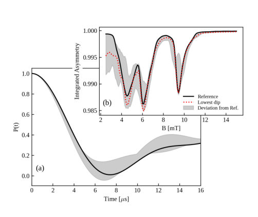
<figcaption class="paper-figure-caption"><b>Fig 5.</b> FIG. 5. Perturbation induced by local fields at the muon and V sites on ZF and ALC measurements. The black line shows the results obtained with the minimal model described in the text. The shaded area highlight the changes induced by the presence of local (hyper- fine) fields of electronic origin at the muon and the V nuclei. The dotted red line in panel (b) shows the one simulation with the lowest dip resulting from the presence of local fields.</figcaption>
</figure>
</div>

<p><strong>Summary.</strong> This work uses muon-spin spectroscopy ($\mu	ext{SR}$) on $   ext{AV}_3   ext{Sb}_5$ kagome metals to investigate the electronic state preceding superconductivity. The key finding is the evidence for an additional charge modulation within the $  ext{CDW}$ phase, detected via $ ext{ALC}$ muon-spin spectroscopy. This suggests that the electronic order is more complex than previously modeled by magnetic field effects alone.</p>
<p><strong>Why it may be interesting.</strong> The use of highly sensitive local probes like $\mu	ext{SR}$ to detect subtle, temperature-dependent charge modulations within a complex correlated electronic state is relevant to understanding emergent quantum phases.</p>
<details>
<summary>Detailed structure</summary>
<p><strong>Main problem.</strong> The study aims to elucidate the poorly understood electronic state in $   ext{AV}_3   ext{Sb}_5$ kagome metals that exists immediately preceding the superconducting phase.</p>
<p><strong>Main result.</strong> The $  ext{ALC}$-$\mu  ext{SR}$ results point towards an additional charge modulation occurring within the Charge Density Wave ($  ext{CDW}$) phase at temperatures $T^* < T_{	ext{CDW}}$ for $  ext{A} =    ext{Cs}$ and $  ext{Rb}$.</p>
<p><strong>Method.</strong> The research employs Avoided Level Crossing ($  ext{ALC}$) muon-spin spectroscopy ($\mu  ext{SR}$) and Zero Field ($  ext{ZF}$)-$\mu   ext{SR}$ measurements to probe local electronic environments.</p>
<p><strong>Model / system.</strong> The physical system is the $    ext{AV}_3   ext{Sb}_5$ family of kagome metals ($   ext{A} =    ext{K},     ext{Rb},    ext{Cs}$), which exhibit intertwined electronic and structural orders, including a $    ext{CDW}$ state.</p>
<p><strong>Key observables.</strong> Muon spin relaxation rate ($\lambda$ and $\Delta$), $ ext{ALC}$ resonance dips (time-integrated asymmetry), and the temperature dependence of these observables.</p>
<p><strong>Important parameters / regimes.</strong> The transition temperatures $T^*$ and $T_{	ext{CDW}}$, and the applied low longitudinal magnetic field ($ ext{LF}$).</p>
<p><strong>Assumptions / limitations.</strong> The interpretation requires considering an additional electronic mechanism beyond simple internal magnetic field contributions to explain the observed $ ext{ALC}$ transition.</p>
<p><strong>Figures summary.</strong> Figures illustrate the temperature dependence of $ ext{ZF}$ muon asymmetry and $   ext{ALC}$-$\mu  ext{SR}$ resonance dips for $   ext{CsV}_3  ext{Sb}_5$ and $    ext{KV}_3   ext{Sb}_5$, showing field shifts and resonance area changes.</p>
<p><strong>Paper structure.</strong> The paper analyzes $   ext{ALC}$-$\mu  ext{SR}$ and $  ext{ZF}$-$\mu   ext{SR}$ data across different alkali metals ($ ext{A}$), focusing on the temperature evolution of spectral features near the $ ext{CDW}$ transition to pinpoint the origin of an additional electronic modulation.</p>
</details>
<details>
<summary>Abstract</summary>
<p>AV$_3$Sb$_5$ kagome metals are characterized by intertwined electronic and structural orders, which motivated extensive studies in recent years. Yet the details of the electronic state preceding the superconducting phase remain poorly understood. Here we extend our previous investigation [Phys. Rev. Research 7, L032046 (2025)] of RbV$_3$Sb$_5$ using avoided level crossing (ALC) muon-spin spectroscopy to the $A$ = Cs and K systems. Consistent with our previous study, we identify a second transition whose origin cannot be attributed solely to an internal magnetic field, indicating the involvement of an additional electronic mechanism that subtly modifies the charge distribution within the V plane. In particular, the ALC results point towards an additional charge modulation taking place within the charge density wave (CDW) phase and occurring at $T^{*}<T_{CDW}$ for $A$ = Cs and Rb, or in the vicinity of $T_{CDW}$ for $A$ = K.</p>
</details>
<p><sub><a href="#top">↑ back to top</a></sub></p>

<p><a id="paper-2608.29933"></a></p>
<h3 id="exact-entanglement-swapping-through-single-occupancy-measurements-in-gaussian-fermion-states"><a href="http://arxiv.org/abs/2608.29933v1">Exact Entanglement Swapping through Single-Occupancy Measurements in Gaussian Fermion States</a></h3>
<p><strong>Authors:</strong> Jiyuan Fang<br>
<strong>Type:</strong> theory · <strong>Category:</strong> quantum information and computing · <strong>PDF:</strong> <a href="https://arxiv.org/pdf/2608.29933v1">https://arxiv.org/pdf/2608.29933v1</a><br>
<strong>Analysis basis:</strong> full PDF text, analyzed in chunks
<strong>Topic relevance:</strong> <code>quantum measurements</code> <strong>3/5</strong> · <code>analog quantum simulation</code> <strong>1/5</strong></p>
<div class="figure-strip-hint">↔ Scroll figures horizontally</div>
<div class="paper-figures-scroll">
<figure class="paper-figure-card">
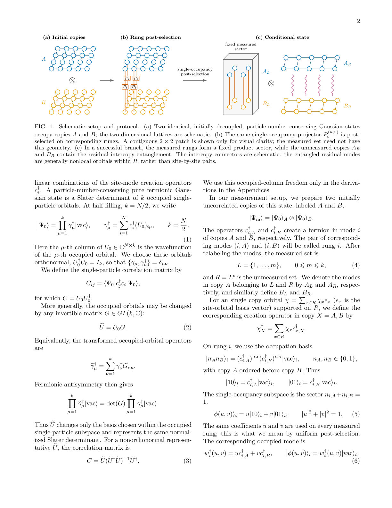
<figcaption class="paper-figure-caption"><b>Fig 1.</b> Low-resolution page preview, page 2</figcaption>
</figure>
<figure class="paper-figure-card">
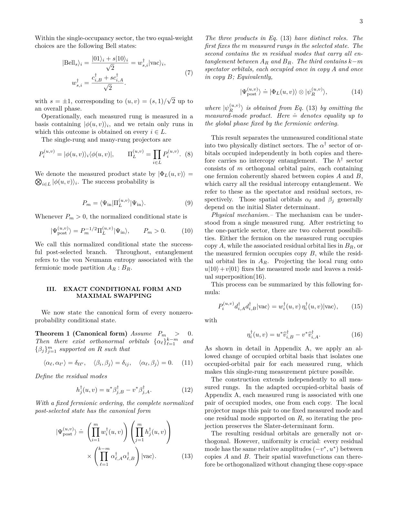
<figcaption class="paper-figure-caption"><b>Fig 2.</b> Low-resolution page preview, page 3</figcaption>
</figure>
<figure class="paper-figure-card">
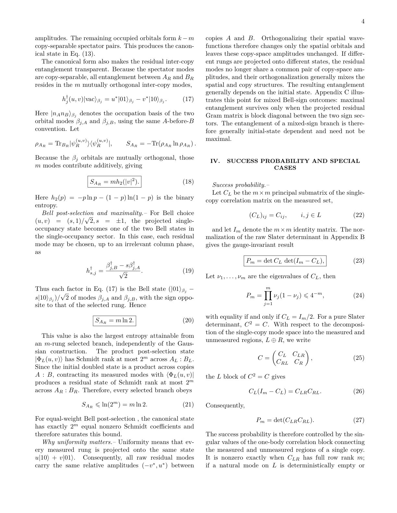
<figcaption class="paper-figure-caption"><b>Fig 3.</b> Low-resolution page preview, page 4</figcaption>
</figure>
<figure class="paper-figure-card">
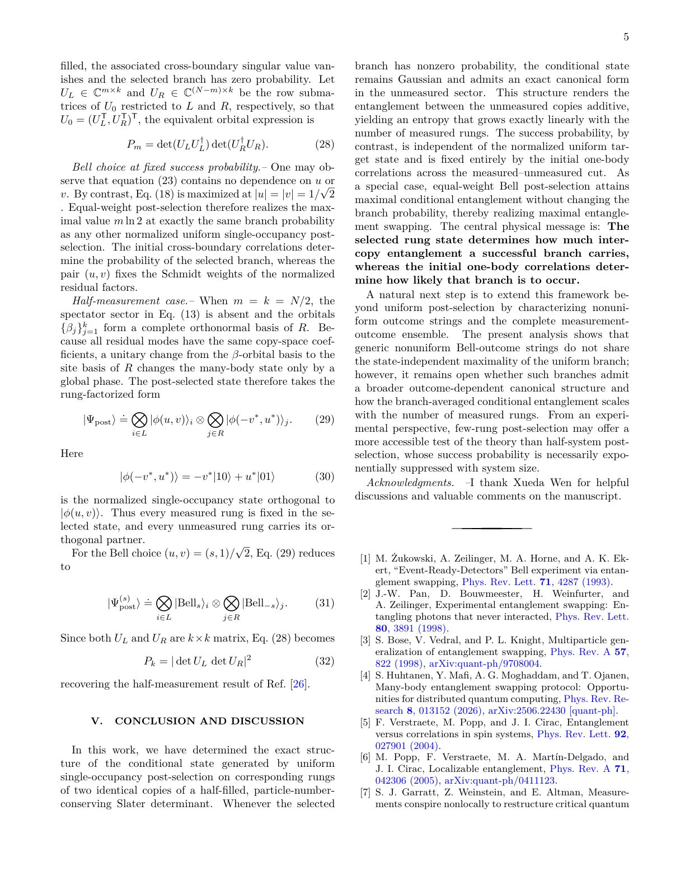
<figcaption class="paper-figure-caption"><b>Fig 4.</b> Low-resolution page preview, page 5</figcaption>
</figure>
<figure class="paper-figure-card">
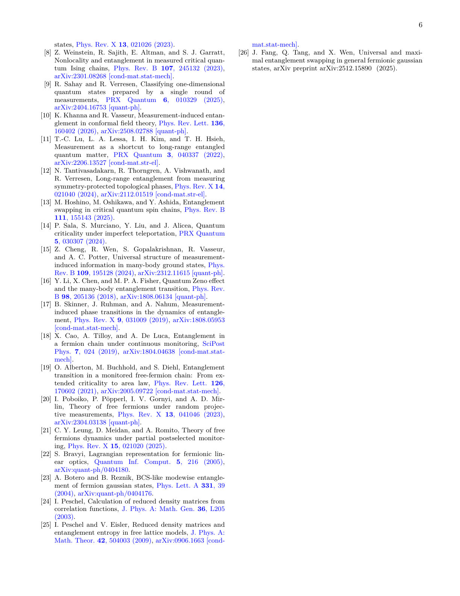
<figcaption class="paper-figure-caption"><b>Fig 5.</b> Low-resolution page preview, page 6</figcaption>
</figure>
</div>

<p><strong>Summary.</strong> This work analyzes entanglement swapping in two copies of a free fermion Gaussian state by performing single-occupancy measurements on multiple rungs. It proves that the resulting entanglement entropy in the unmeasured parts is universal, depending only on the measurement parameters. The methodology involves advanced fermionic field theory techniques to isolate the residual entangled modes.</p>
<p><strong>Why it may be interesting.</strong> The result shows that entanglement swapping in this fermionic setting yields a universal entropy formula, providing a clean, analytically tractable model for entanglement manipulation beyond simple qubit systems.</p>
<details>
<summary>Detailed structure</summary>
<p><strong>Main problem.</strong> The paper determines the exact entanglement structure of the conditional state resulting from measuring specific rungs in two identical copies of a free fermion Gaussian state.</p>
<p><strong>Main result.</strong> The entanglement entropy between the unmeasured parts of the two copies is found to be $S = m h_2(|v|^2)$, which is universal and independent of the initial state.</p>
<p><strong>Method.</strong> The analysis uses projection operators and canonical transformations on the fermionic state to separate the unmeasured system into residual and spectator modes.</p>
<p><strong>Model / system.</strong> The system consists of two identical copies of a half-filled free fermion Gaussian state, analyzed by post-selecting a specific single-occupancy state on $m$ measured rungs.</p>
<p><strong>Key observables.</strong> Entanglement entropy ($S$), Success Probability ($P_m$), and the conditional state $|\Psi(u,v)_{	ext{post}}
angle$.</p>
<p><strong>Important parameters / regimes.</strong> Number of measured rungs ($m$), the single-occupancy state parameters ($u, v$), and the initial correlation structure.</p>
<p><strong>Assumptions / limitations.</strong> The analysis assumes the success probability $P_m$ is non-zero, and relies on constructing an adapted occupied-orbital basis via Gram-Schmidt orthogonalization.</p>
<p><strong>Figures summary.</strong> Figure 1 schematically illustrates the process: initial copies, single-occupancy post-selection on rungs, and the resulting conditional state structure.</p>
<p><strong>Paper structure.</strong> The paper develops the mathematical framework by adapting the occupied-orbital basis (Appendix A), calculating the success probability using determinants (Appendix B), and analyzing the residual entanglement entropy (Appendix C).</p>
</details>
<details>
<summary>Abstract</summary>
<p>We determine the exact entanglement structure of the conditional state obtained by measuring $m$ corresponding rungs ($m\leq N/2$) in two identical copies of an arbitrary half-filled free fermion Gaussian state and post-selecting the same normalized single-fermion state ($|ψ\rangle = u|10\rangle+v|01\rangle$, where 0 and 1 denote the fermion occupancy on each sites) on each rung. For $m<N/2$, the conditional wavefunction generally depends on the initial state. Nevertheless, whenever the selected outcome has nonzero probability, the state on the unmeasured sites remains Gaussian and factorizes exactly into $N-m$ different orthogonal modes including $m$ inter-copy entangling modes and $N-2m$ spectator modes localized in one copy. Consequently, the entanglement entropy between the unmeasured parts of the two copies is $S=m h_2(|v|^2)$, independent of the initial state, where $h_2(x)=-x\ln x-(1-x)\ln(1-x)$. The success probability is given by $P_m=\det C_L\det(I_m-C_L)=\det(C_{LR}C_{RL})$, determined solely by the initial correlations and independent of ($u$,$v$). Equal-weight Bell post-selection serves as a special case that achieves the maximal entanglement swapping.</p>
</details>
<p><sub><a href="#top">↑ back to top</a></sub></p>

<p><a id="paper-2608.29875"></a></p>
<h3 id="homogeneous-attractive-bose-einstein-condensates-with-repulsive-three-body-interactions-the-two-dimensional-case"><a href="http://arxiv.org/abs/2608.29875v1">Homogeneous attractive Bose-Einstein condensates with repulsive three-body interactions: the two-dimensional case</a></h3>
<p><strong>Authors:</strong> Dinh-Thi Nguyen<br>
<strong>Type:</strong> theory · <strong>Category:</strong> quantum gases · <strong>PDF:</strong> <a href="https://arxiv.org/pdf/2608.29875v1">https://arxiv.org/pdf/2608.29875v1</a><br>
<strong>Analysis basis:</strong> full PDF text, analyzed in chunks
<strong>Topic relevance:</strong> <code>analog quantum simulation</code> <strong>3/5</strong> · <code>Keldysh / 2PI / non-Gaussian methods</code> <strong>1/5</strong></p>
<div class="figure-strip-hint">↔ Scroll figures horizontally</div>
<div class="paper-figures-scroll">
<figure class="paper-figure-card">
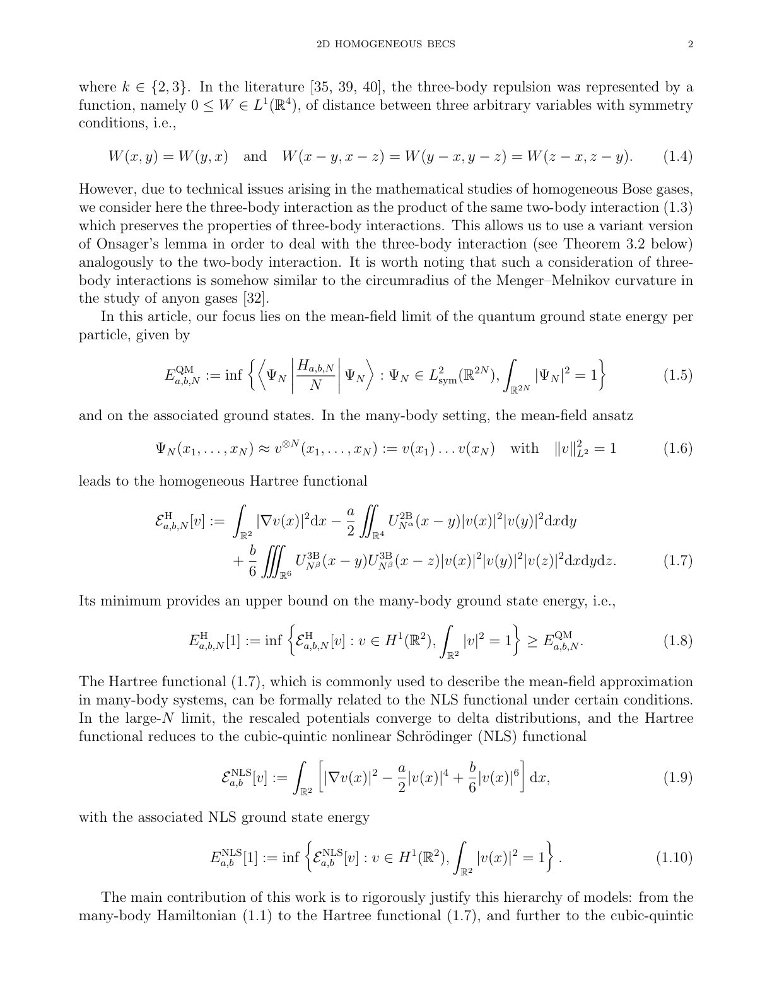
<figcaption class="paper-figure-caption"><b>Fig 1.</b> Low-resolution page preview, page 2</figcaption>
</figure>
<figure class="paper-figure-card">
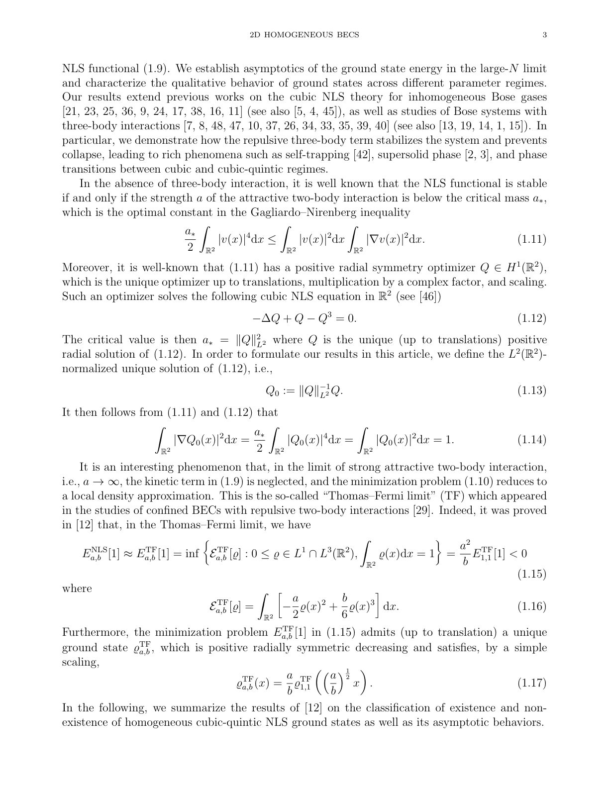
<figcaption class="paper-figure-caption"><b>Fig 2.</b> Low-resolution page preview, page 3</figcaption>
</figure>
<figure class="paper-figure-card">
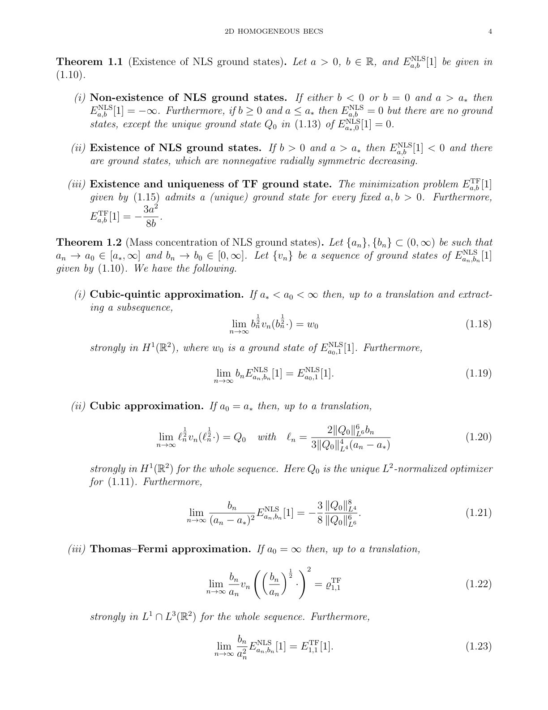
<figcaption class="paper-figure-caption"><b>Fig 3.</b> Low-resolution page preview, page 4</figcaption>
</figure>
<figure class="paper-figure-card">
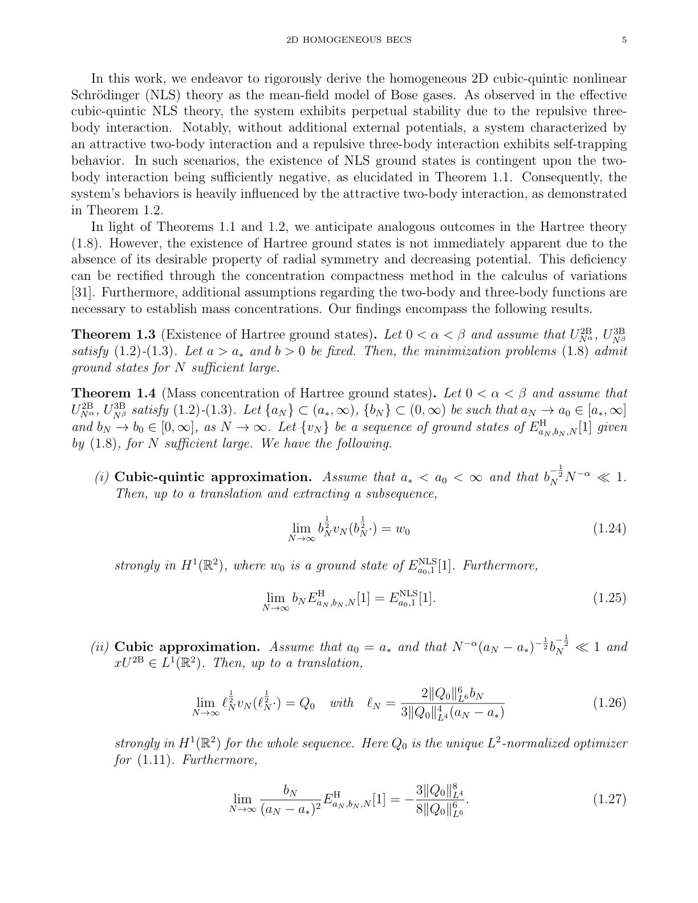
<figcaption class="paper-figure-caption"><b>Fig 4.</b> Low-resolution page preview, page 5</figcaption>
</figure>
<figure class="paper-figure-card">
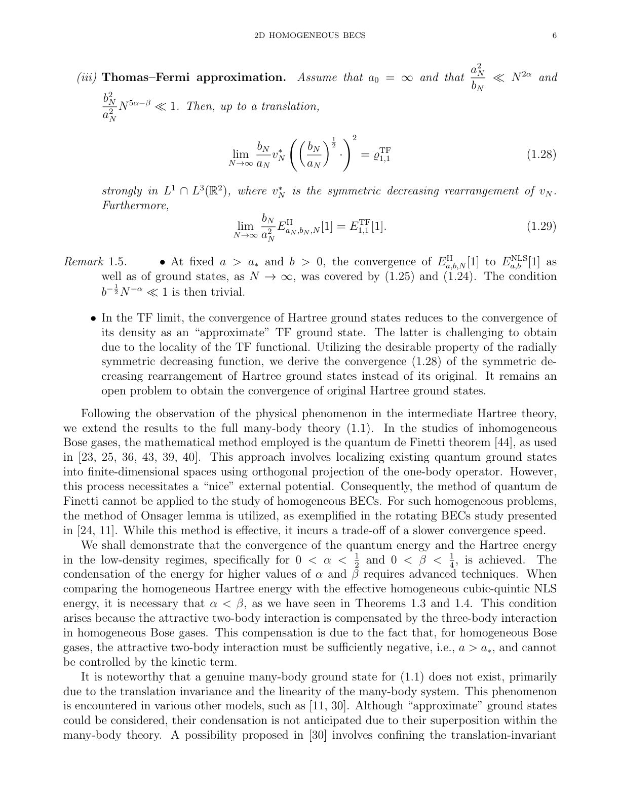
<figcaption class="paper-figure-caption"><b>Fig 5.</b> Low-resolution page preview, page 6</figcaption>
</figure>
</div>

<p><strong>Summary.</strong> This paper investigates a Bose gas in 2D with both attractive two-body and repulsive three-body interactions. It uses the Hartree theory to derive the effective cubic-quintic nonlinear Schrödinger equation governing the mean-field limit. The core contribution is establishing the mathematical conditions under which the quantum ground state energy converges to known limiting forms, such as the Thomas-Fermi or pure NLS solutions.</p>
<p><strong>Why it may be interesting.</strong> This work provides a detailed mathematical framework for understanding the mean-field behavior of interacting quantum gases, particularly when multiple interaction terms (two-body and three-body) are present, which is crucial for modeling real-world ultracold atomic systems.</p>
<details>
<summary>Detailed structure</summary>
<p><strong>Main problem.</strong> To rigorously derive the homogeneous cubic-quintic nonlinear Schrödinger (NLS) functional as the mean-field limit of a quantum many-body Hamiltonian describing a Bose gas.</p>
<p><strong>Main result.</strong> The paper establishes conditions for the existence of NLS ground states and derives the asymptotic limits of the quantum ground state energy, showing convergence to cubic-quintic, cubic, or Thomas-Fermi approximations.</p>
<p><strong>Method.</strong> The analysis employs the intermediate Hartree theory and rigorous asymptotic analysis by taking the large-$N$ limit under various scaling assumptions for the interaction parameters.</p>
<p><strong>Model / system.</strong> The system is a homogeneous Bose gas of $N$ identical bosons in two dimensions ($\mathbb{R}^2$) characterized by both an attractive two-body interaction and a repulsive three-body interaction.</p>
<p><strong>Key observables.</strong> Ground state energy per particle ($E_{QM}$), the NLS ground state energy ($E_{	ext{NLS}}$), and the Thomas-Fermi (TF) energy functional.</p>
<p><strong>Important parameters / regimes.</strong> Interaction strengths ($a$ for two-body, $b$ for three-body), the number of particles ($N$), and critical interaction values ($a^*$).</p>
<p><strong>Assumptions / limitations.</strong> The derivation of the NLS functional requires the large-$N$ limit, and the analysis relies on specific scaling regimes for the interaction parameters.</p>
<p><strong>Paper structure.</strong> The paper proceeds by first deriving the mean-field NLS functional from the full Hamiltonian using the Hartree ansatz, followed by establishing theorems regarding the existence of ground states and analyzing the convergence of the quantum energy to various mean-field limits (Cubic-quintic, Cubic, TF).</p>
</details>
<details>
<summary>Abstract</summary>
<p>We consider a homogeneous Bose gas composed of $N$ identical bosons occupying an infinite two-dimensional space. This gas exhibits both an attractive two-body interaction and a repulsive three-body interaction. Via the intermediate Hartree theory, we rigorously derive the homogeneous cubic-quintic nonlinear Schroedinger functional as the mean-field limit of the model. Our investigation focuses on the system's behavior in relation to the two-body interaction.</p>
</details>
<p><sub><a href="#top">↑ back to top</a></sub></p>

<p><a id="paper-2608.31114"></a></p>
<h3 id="overcoming-critical-slowing-down-in-frustrated-spin-systems-by-learned-multiscale-sampling"><a href="http://arxiv.org/abs/2608.31114v1">Overcoming critical slowing down in frustrated spin systems by learned multiscale sampling</a></h3>
<p><strong>Authors:</strong> Gabriele Bandini, Giulio Biroli, Patrick Charbonneau, Andrea Gambassi<br>
<strong>Type:</strong> theory · <strong>Category:</strong> statistical mechanics · <strong>PDF:</strong> <a href="https://arxiv.org/pdf/2608.31114v1">https://arxiv.org/pdf/2608.31114v1</a><br>
<strong>Analysis basis:</strong> full PDF text, analyzed in chunks
<strong>Topic relevance:</strong> <code>analog quantum simulation</code> <strong>3/5</strong> · <code>methods for driven-dissipative</code> <strong>1/5</strong></p>
<div class="figure-strip-hint">↔ Scroll figures horizontally</div>
<div class="paper-figures-scroll">
<figure class="paper-figure-card">
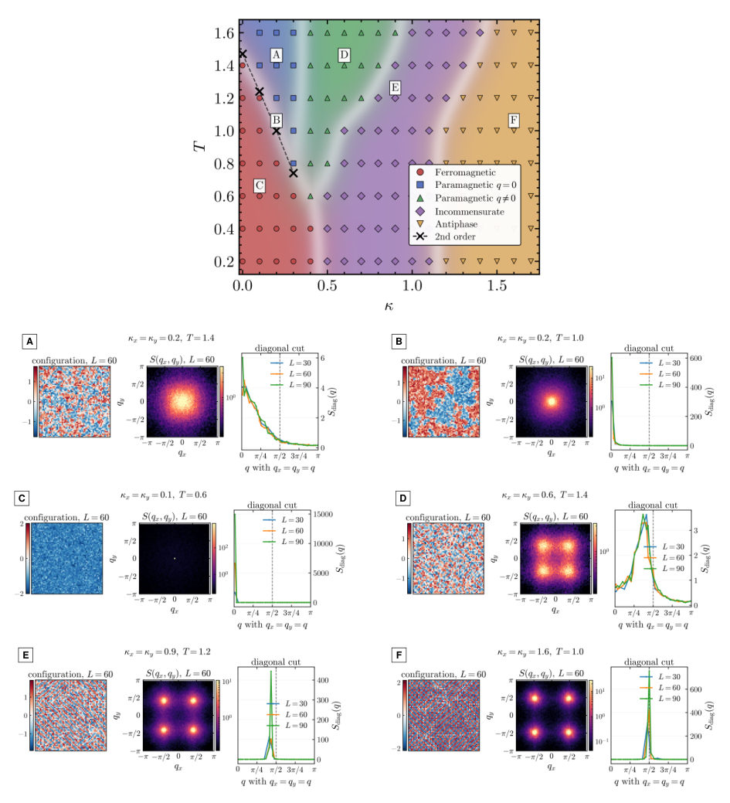
<figcaption class="paper-figure-caption"><b>Fig 1.</b> FIG. 1. Phase diagram of the sBNNNI model with λ = 1 and representative behaviors in the various phases. Top: Phase diagram in the (κ, T) plane obtained from Monte Carlo simulations. The five phases (different colored zones) are identified from the behavior and finite-size scaling of the structure factor S(qx, qy) (see Sec. II), sampled at the points indicated by symbols in the phase diagram. While the faint boundaries between the various phases are approximate guides to the eyes, the Ising-like ferromagnetic-to-paramagnetic phase transition was quantitatively determined via finite-size scaling of the magnetic susceptibility using Ising critical exponents (black crosses, see App. B). Note...</figcaption>
</figure>
<figure class="paper-figure-card">
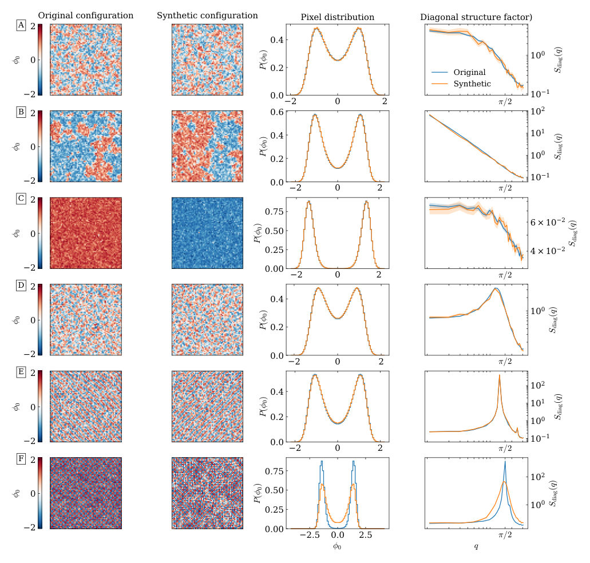
<figcaption class="paper-figure-caption"><b>Fig 2.</b> FIG. 2. Comparison between Monte Carlo configurations and samples generated through WCRG for representative points of the sBNNNI phase diagram (A–F in Fig. 1). Subsequent rows correspond to a point—from top to bottom: (A) in the PM phase, (B) along the Ising critical line, (C) in the FM phase, (D) in the MPM phase, (E) in the IC phase, and (F) in the AF phase. For each point, the panels display: (1st column) an original Monte Carlo configuration, (2nd column) a synthetic configuration reconstructed through recursive conditional sampling, the comparison between the original (blue) and the reconstructed (yellow) distributions of (3rd column) P(ϕ0(i)) and (4th column) the diagonal structure...</figcaption>
</figure>
<figure class="paper-figure-card">
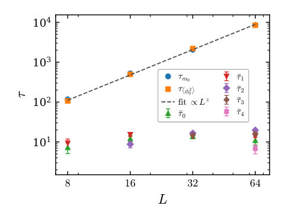
<figcaption class="paper-figure-caption"><b>Fig 3.</b> FIG. 4. Autocorrelation times at the Ising-like critical point of the sBNNNI model with κ = 0.2 and T = Tpc(L). For local Monte Carlo dynamics, the autocorrelation times of the magnetization m0 and of the second moment ⟨ϕ2 0⟩grow al- gebraically with system size. The dashed line shows a power- law fit, yielding zloc = 2.11(4). By contrast, the conditional autocorrelation times ¯τj(L), measured for the second moment of the reconstructed field during conditional wavelet sampling at scale j, remain of order unity. No systematic growth is ob- served either with the final microscopic size L or with the scale-dependent size Lj = L/2j.</figcaption>
</figure>
<figure class="paper-figure-card">

<figcaption class="paper-figure-caption"><b>Fig 4.</b> FIG. 5. Comparison between the statistics of configuration-wide observables for original and synthetic con- figurations along the Ising-like critical point of the sBNNNI model, with κ = 0.2, T = 1.0, and L = 64. Distribution of (a) the absolute magnetization |m| and (b) the intensive micro- scopic energy e. While the former shows excellent agreement between original and synthetic samples the latter presents a visible mismatch. This discrepancy reflects the truncation of the exact multiscale effective energies entering the hierarchi- cal probability distribution of the WCRG.</figcaption>
</figure>
<figure class="paper-figure-card">

<figcaption class="paper-figure-caption"><b>Fig 5.</b> FIG. 6. Reduced functional density F/N of the FM state (solid line), period-four antiphase (dashed line), and multihar- monic IC profile (dash-dotted line). The IC branch is shown for κ ≥1/4, where q⋆in Eq. (A10) is real. Within the vari- ational families considered, it has the lowest leading energy approximately for 0.393 ≲κ ≲0.869. Since F is indepen- dent of T and λ, the profiles and crossing points are universal within the leading low-temperature scaling problem.</figcaption>
</figure>
</div>

<p><strong>Summary.</strong> This work introduces the Wavelet Conditional Renormalization Group (WCRG) method to simulate frustrated spin systems that are intractable for standard cluster algorithms. By learning the conditional probability distributions across multiple coarse-graining scales, WCRG achieves highly efficient sampling, bypassing critical slowing down. This demonstrates that learned multiscale sampling is a robust technique for complex statistical physics problems.</p>
<p><strong>Why it may be interesting.</strong> The development of learned multiscale sampling techniques provides a powerful, generalizable tool for simulating complex, frustrated many-body systems where standard simulation methods break down due to critical slowing down.</p>
<details>
<summary>Detailed structure</summary>
<p><strong>Main problem.</strong> The paper addresses the challenge of critical slowing down in simulating frustrated spin systems, a problem where conventional cluster Monte Carlo algorithms fail.</p>
<p><strong>Main result.</strong> The proposed Wavelet Conditional Renormalization Group (WCRG) method successfully overcomes this limitation, achieving an overall sampling complexity of O(log^2 L) at an Ising-like critical point.</p>
<p><strong>Method.</strong> WCRG samples the system distribution recursively by learning and sampling conditional probability distributions of wavelet coefficients across multiple coarse-graining scales.</p>
<p><strong>Model / system.</strong> The study uses a frustrated two-dimensional soft-spin model, specifically the soft-spin BNNNI (sBNNNI) model, characterized by competing interactions.</p>
<p><strong>Key observables.</strong> Local-field distribution, structure factor S(qx, qy), and the autocorrelation time ($  au$) of the dynamics.</p>
<p><strong>Important parameters / regimes.</strong> The system is analyzed across a phase diagram defined by parameters like $\lambda$, $\kappa_x$, and $\kappa_y$.</p>
<p><strong>Assumptions / limitations.</strong> The accuracy of the fast sampling scheme relies on the expressiveness of the energy-based model (finite ansatz) used to estimate the wavelet conditional distributions, leading to a potential mismatch with the true microscopic energy.</p>
<p><strong>Figures summary.</strong> Figure 1 illustrates the phase diagram of the sBNNNI model and shows representative configurations, averaged structure factors, and diagonal cuts for various points in the phase diagram.</p>
<p><strong>Paper structure.</strong> The paper first introduces the failure of conventional cluster algorithms in frustrated systems. It then details the WCRG method, which decomposes the distribution using wavelets and learns conditional distributions via score matching. Finally, it demonstrates the method's efficiency by comparing the scaling of decorrelation time against standard local MCMC methods.</p>
</details>
<details>
<summary>Abstract</summary>
<p>Cluster algorithms, such as the Swendsen--Wang and Wolff methods, are among the most successful MCMC methods for mitigating critical slowing down in statistical systems. These constructive cluster algorithms, however, fail in the presence of even extremely weak frustration. Here, we sidestep this fundamental limitation by learning rather than constructing the relevant clusters. Specifically, we use the wavelet conditional renormalization group (WCRG) sampling method to learn the probability distribution of collective fluctuations of a frustrated two-dimensional soft-spin model. Configurations are then generated recursively from coarse to fine scales by sampling conditional wavelet distributions. The WCRG method reproduces the main statistical properties of the system across different phases, including the local-field distribution and the structure factor. At an Ising-like critical point, the conditional dynamics remains decorrelated within $\mathcal{O}(1)$ sweeps at each scale, yielding an overall sampling complexity of $\mathcal{O}(\log_2 L)$, thus making WCRG much more efficient than standard local MCMC methods. These results show that learned multiscale sampling can overcome critical slowing down in frustrated systems for which conventional cluster algorithms fail. By assessing the sampling accuracy of different observables, we also clarify the main tradeoff of the WCRG method: the accuracy of the fast sampling scheme depends on the expressiveness of the energy-based model used to estimate the wavelet conditional distributions.</p>
</details>
<p><sub><a href="#top">↑ back to top</a></sub></p>

<p><a id="paper-2608.31116"></a></p>
<h3 id="static-field-shielding-of-bosonic-molecules-evaporation-to-degeneracy-and-self-bound-droplets"><a href="http://arxiv.org/abs/2608.31116v1">Static-Field Shielding of Bosonic Molecules: Evaporation to Degeneracy and Self-Bound Droplets</a></h3>
<p><strong>Authors:</strong> Jongheum Jung, Laura Futamura, Matteo Ciardi, Jason Rosenberg, Youssef Aziz Alaoui, Yukai Lu, Thomas Pohl, Waseem S. Bakr<br>
<strong>Type:</strong> both · <strong>Category:</strong> quantum gases · <strong>PDF:</strong> <a href="https://arxiv.org/pdf/2608.31116v1">https://arxiv.org/pdf/2608.31116v1</a><br>
<strong>Analysis basis:</strong> full PDF text, analyzed in chunks
<strong>Topic relevance:</strong> <code>analog quantum simulation</code> <strong>3/5</strong> · <code>correlated / nonlocal dissipation</code> <strong>1/5</strong></p>
<div class="figure-strip-hint">↔ Scroll figures horizontally</div>
<div class="paper-figures-scroll">
<figure class="paper-figure-card">

<figcaption class="paper-figure-caption"><b>Fig 1.</b> FIG. 1. Static electric field shielding above a F¨orster resonance. (a) Experimental setup. An eight-rod electrode configuration in vacuum enables precise tuning of the electric field at the molecular gas while supporting a numerical aperture NA = 0.5 imaging system [12]. The red shaded regions represent the repulsive shielding barriers experienced by the molecules. (b) Energy levels of the |˜1, 0; ˜1, 0⟩(red) and |˜0, 0; ˜2, 0⟩(blue) pair states near the F¨orster resonance at 4.2076 kV/cm. The vertical dashed line indicates the field corresponding to the F¨orster resonance. (c) Adiabatic interaction potentials for the asymptotic incoming channel |˜1, 0; ˜1, 0⟩with partial wave L = 0....</figcaption>
</figure>
<figure class="paper-figure-card">

<figcaption class="paper-figure-caption"><b>Fig 2.</b> FIG. 2. Two-body loss rate coefficients βloss. (a) Number (left) and temperature (right) of molecules as functions of holding time for ∆F = 2π × 17 MHz. Each point is obtained by averaging over 15 shots. Error bars of the number of molecules show 1σ standard error of the mean. Error bars of the temperature of molecules show the 1σ error from the fit of the time-of-flight expansion. (b) βloss at different F¨orster defects ∆F. The blue shaded region represents the range of theoretical two-body loss-rate coefficients obtained from coupled-channel calculations after thermal averaging at temperatures between 0.4 µK and 1 µK, corresponding to the temperature range sampled during our two-body-loss...</figcaption>
</figure>
<figure class="paper-figure-card">

<figcaption class="paper-figure-caption"><b>Fig 3.</b> FIG. 3. Three-body loss. (a) Two-body loss-rate coefficient βloss (lower) and bound-state energy Eb (upper) as functions of the F¨orster defect ∆F. In the lower plot, the dark gray shaded region shows the calculated βloss for collision energies ranging from 0.1 µK to 1 µK. The light gray shaded region indicates the range of ∆F over which a bound state exists, which is expanded in the upper plot. We choose two electric fields: one outside the bound-state regime, ∆F/2π = 146 MHz (blue), and one within the bound-state regime, ∆F/2π = 314 MHz (red), where the bound-state energy is Eb/h = 60 Hz. (b) Fits to the molecule number and temperature as functions of hold time in the ODT. At ∆F/2π = 146...</figcaption>
</figure>
<figure class="paper-figure-card">

<figcaption class="paper-figure-caption"><b>Fig 4.</b> FIG. 4. Evaporation curve of molecules at ∆F/2π = 17 MHz. (a) Phase-space density (PSD, upper), temperature (center), and peak density (lower) versus molecule number. The red dashed line is a linear fit on log–log scales used to extract the evaporation efficiency. Each data point is an average of three to five consecutive shots. Error bars are 1σ standard error of the mean. (b) One-dimensional optical- density (OD) profiles at different stages of evaporation, obtained by integrating the two-dimensional OD distributions along the y axis. Images are taken after 6 ms time of flight. The corresponding PSD is indicated above each profile, with averaged two-dimensional OD images shown in the...</figcaption>
</figure>
<figure class="paper-figure-card">

<figcaption class="paper-figure-caption"><b>Fig 5.</b> FIG. 5. Cloud size of a self-bound droplet at different time-of-flight (ToF). (a) Each column shows an absorption image of the molecular cloud (top) and a 1D profile (integrated along the y axis) of absorption images (bottom) after different ToF. The ToF is shown in the upper-left corner of each image. Bimodal fits are shown as solid red lines, whereas Gaussian fits to the thermal cloud are shown as dashed gray lines. We fit each two-dimensional density distribution to a sum of two Gaussian functions. Each image is averaged over 10 shots. Each color bar is self-normalized. (b) Gaussian 1/e1/2 radii of the droplet, σx and σy, as functions of ToF. Red (σx) and blue (σy) dashed lines indicate...</figcaption>
</figure>
</div>

<p><strong>Summary.</strong> This paper reports on using static electric fields to achieve Förster shielding in bosonic dipolar molecules, effectively suppressing molecular loss channels. By operating in a specific field window, the researchers enabled efficient evaporative cooling to quantum degeneracy and successfully observed the formation of self-bound quantum droplets. This establishes a robust, single-field technique for preparing and studying highly correlated quantum matter.</p>
<p><strong>Why it may be interesting.</strong> This work provides a highly controllable, single-field mechanism (Förster shielding) to manage the complex loss channels (two-body and three-body) inherent in highly interacting dipolar quantum gases, which is a major frontier in AMO physics.</p>
<details>
<summary>Detailed structure</summary>
<p><strong>Main problem.</strong> The primary challenge is achieving quantum degeneracy and observing self-bound droplets in bosonic molecules while suppressing inelastic collisions, particularly three-body loss.</p>
<p><strong>Main result.</strong> The authors successfully demonstrated that static-field Förster shielding can suppress two-body loss by four orders of magnitude and, crucially, suppress three-body loss in a bound-state-free window, enabling efficient evaporative cooling to degeneracy.</p>
<p><strong>Method.</strong> The study combines experimental measurements of loss rates (two-body and three-body) during evaporative cooling with theoretical modeling, including Path Integral Monte Carlo simulations.</p>
<p><strong>Model / system.</strong> The system involves ultracold bosonic $^{23}	ext{Na}^{87}	ext{Rb}$ molecules with tunable dipolar interactions, trapped in an optical dipole trap and controlled by a static electric field to induce Förster shielding.</p>
<p><strong>Key observables.</strong> Two-body and three-body loss rate coefficients ($eta_{	ext{loss}}$, $L_3$), phase-space density, molecule number, and observation of self-bound droplets.</p>
<p><strong>Important parameters / regimes.</strong> The Föster defect ($\Delta F$) controls the shielding; the study focuses on the 'bound-state-free electric-field window' for optimal cooling.</p>
<p><strong>Assumptions / limitations.</strong> The analysis assumes the applicability of kinetic models for loss rates and uses simplified Gaussian forms for droplet decay dynamics.</p>
<p><strong>Figures summary.</strong> Figures illustrate the experimental setup and energy level diagrams near the Föster resonance; subsequent figures show the dependence of two-body loss rates on the field defect and the evolution of the gas during evaporation.</p>
<p><strong>Paper structure.</strong> The paper progresses by first establishing the necessity of shielding to suppress two-body loss, then demonstrating that operating in a bound-state-free window also suppresses three-body loss, which allows for efficient evaporative cooling to degeneracy, culminating in the observation and characterization of self-bound droplets.</p>
</details>
<details>
<summary>Abstract</summary>
<p>The strong, tunable dipolar interactions of ultracold molecules make them a powerful platform for quantum many-body physics, but reaching degeneracy by evaporative cooling requires suppressing inelastic collisions. Microwave collisional shielding has enabled the preparation of degenerate Fermi gases and Bose-Einstein condensates of polar molecules, whereas static electric field shielding has been limited to fermionic species, which are less prone to inelastic loss. We demonstrate static-field Förster shielding of bosonic $^{23}$Na$^{87}$Rb molecules, suppressing two-body loss by up to four orders of magnitude. Within a bound-state-free electric-field window, three-body loss is also strongly suppressed, enabling efficient evaporation. Evaporating with an efficiency of 2.09(9), we increase the phase-space density of the gas by two orders of magnitude, reaching degeneracy with 7200(1000) molecules. We observe self-bound droplets at the end of evaporation over a wide range of field strengths, emerging from either degenerate or non-degenerate parent gases. We perform Path Integral Monte Carlo simulations, which suggest that the observed droplets are filamentary in nature, and find good agreement with the experimentally observed droplet formation temperatures. Our results establish Förster shielding as a single-field route to prepare degenerate gases and self-bound droplets of bosonic polar molecules.</p>
</details>
<p><sub><a href="#top">↑ back to top</a></sub></p>

<p><a id="paper-2608.29792"></a></p>
<h3 id="thermal-hall-signatures-of-distinct-schwinger-boson-flux-sectors-on-the-honeycomb-lattice"><a href="http://arxiv.org/abs/2608.29792v1">Thermal Hall Signatures of Distinct Schwinger-Boson Flux Sectors on the Honeycomb Lattice</a></h3>
<p><strong>Authors:</strong> Daiki Sasamoto<br>
<strong>Type:</strong> theory · <strong>Category:</strong> strongly correlated electrons · <strong>PDF:</strong> <a href="https://arxiv.org/pdf/2608.29792v1">https://arxiv.org/pdf/2608.29792v1</a><br>
<strong>Analysis basis:</strong> full PDF text, analyzed in chunks
<strong>Topic relevance:</strong> <code>analog quantum simulation</code> <strong>3/5</strong> · <code>Keldysh / 2PI / non-Gaussian methods</code> <strong>1/5</strong></p>
<div class="figure-strip-hint">↔ Scroll figures horizontally</div>
<div class="paper-figures-scroll">
<figure class="paper-figure-card">

<figcaption class="paper-figure-caption"><b>Fig 1.</b> FIG. 1. (a) Honeycomb lattice with three representative nearest- neighbor J1 bonds shown in orange. Green and blue mark the NNN J2 coupling and DM orientation, respectively. They are displayed on distinct representative triangles for clarity, although both act on every NNN bond. A blue arrow from i to j defines νij = +1. (b) Physical first Brillouin zone and the Γ-M-K-Γ path used for the 0-flux sector. (c),(d) Magnetic reciprocal primitive cells and the Γ-Xπ-Mπ-Γ and Γ-Xπ/2-Mπ/2-Γ paths, respectively. The subscripts distinguish high- symmetry points of the two magnetic zones, and the dashed hexagon marks the physical first Brillouin zone.</figcaption>
</figure>
<figure class="paper-figure-card">

<figcaption class="paper-figure-caption"><b>Fig 2.</b> FIG. 2. Mean-field Ansätze and gauge conventions on the honey- comb lattice. (a) 0-flux representative with phase 1 on every nearest- neighbor bond. (b) π-flux representative in a 2a1 × a2 magnetic cell. Red dashed nearest-neighbor bonds have an additional factor −1. (c) π/2-flux representative in the 4a1 × a2 magnetic cell. Relative to the displayed bond orientations, every red dashed bond carries the same additional factor i, whereas every black bond has unit phase. Re- versing an arrow uses Aji = −Aij. The resulting Wilson phase is ϕp = π/2 on every hexagon. Arrowheads at bond centers define the orientation of Aij and the other mean fields. Green arrows denote the magnetic translation...</figcaption>
</figure>
<figure class="paper-figure-card">

<figcaption class="paper-figure-caption"><b>Fig 3.</b> FIG. 3. Direct comparison of the three flux sectors at the common parameters J2/J1 = 0.20, D/J1 = 0.10, and h/J1 = 0.05. (a) Self- consistent spinon gaps. (b) Intrinsic thermal Hall responses κxy/T. The inset enlarges the low-temperature response near zero for all three sectors.</figcaption>
</figure>
<figure class="paper-figure-card">

<figcaption class="paper-figure-caption"><b>Fig 4.</b> FIG. 4. Parameter dependence of κxy/T. The columns show the 0-, π-, and π/2-flux branches, respectively. (a)–(c) J2/J1 = 0.20, 0.30, 0.40, and 0.50 at fixed D/J1 = 0.10 and h/J1 = 0.05. (d)–(f) D/J1 = 0, 0.03, 0.06, 0.09, and 0.12 at fixed J2/J1 = 0.20 and h/J1 = 0.05. (g)–(i) h/J1 = −0.04, −0.02, 0, 0.02, and 0.04 at fixed J2/J1 = 0.20 and D/J1 = 0.10.</figcaption>
</figure>
<figure class="paper-figure-card">

<figcaption class="paper-figure-caption"><b>Fig 5.</b> FIG. 6. Small-field thermal Hall response at J2/J1 = 0.20 and D/J1 = 0.10. (a) Field dependence of κxy/T at T/J1 = 0.08. (b) Local slope sxy(T) = ∂(κxy/T)/∂(h/J1) h=0, obtained after antisym- metrizing the ±h data and fitting an odd cubic polynomial through the origin.</figcaption>
</figure>
</div>

<p><strong>Summary.</strong> This theoretical work investigates how thermal transport can distinguish between different mean-field descriptions (flux sectors) of a frustrated Heisenberg magnet on the honeycomb lattice. By calculating the spinon thermal Hall conductivity using Schwinger-boson mean-field theory, the authors demonstrate that the sign and temperature dependence of this conductivity serve as a unique, flux-sensitive signature.</p>
<p><strong>Why it may be interesting.</strong> The use of thermal transport as a diagnostic tool to probe subtle, non-local quantum order (flux sectors) in frustrated magnets is highly relevant to understanding exotic phases in strongly correlated materials.</p>
<details>
<summary>Detailed structure</summary>
<p><strong>Main problem.</strong> The paper addresses the challenge of using thermal transport to distinguish between different mean-field structures (flux sectors) within a single frustrated quantum spin system.</p>
<p><strong>Main result.</strong> The sign and temperature dependence of the intrinsic spinon thermal Hall conductivity ($\kappa_{xy}/T$) provide a flux-sensitive transport signature, with distinct behaviors observed for 0-flux, $\pi$-flux, and $\pi/2$-flux sectors.</p>
<p><strong>Method.</strong> The analysis employs Schwinger-boson mean-field theory combined with the Kubo formula for bosonic Bogoliubov-de Gennes systems to calculate the thermal Hall conductivity.</p>
<p><strong>Model / system.</strong> The system is a spin-1/2 Heisenberg model on the honeycomb lattice, extended with a next-nearest-neighbor Dzyaloshinskii-Moriya interaction and a perpendicular magnetic field.</p>
<p><strong>Key observables.</strong> Intrinsic spinon thermal Hall conductivity ($\kappa_{xy}$), the energy-resolved thermal kernel $I_T(\epsilon)$, and the connected dynamical structure factor $S(\mathbf{q}, \omega)$.</p>
<p><strong>Important parameters / regimes.</strong> The analysis compares three flux sectors: 0-flux, $\pi$-flux, and chiral $\pi/2$-flux, across varying magnetic field ($h$) and DM interaction ($D$) strengths.</p>
<p><strong>Assumptions / limitations.</strong> The calculations rely on the Schwinger-boson mean-field approximation and specific decoupling approximations for the bond operators.</p>
<p><strong>Figures summary.</strong> Figures illustrate the lattice structure and the three distinct mean-field Ansätze (0-, $\pi$-, $\pi/2$-flux). Supporting figures show the energy-resolved origin of the $\pi/2$-flux sign reversal and the connected dynamical structure factor $S(\mathbf{q}, \omega)$ for the different flux sectors.</p>
<p><strong>Paper structure.</strong> The paper systematically develops the mean-field Hamiltonian for the three flux sectors, calculates the thermal Hall conductivity using the Kubo formula, and analyzes the resulting spectral features and temperature dependencies to establish the flux-sensitive diagnostic.</p>
</details>
<details>
<summary>Abstract</summary>
<p>Thermal transport offers a bulk probe of charge-neutral excitations in frustrated magnets. It remains challenging, however, to determine whether such transport can distinguish different parton mean-field structures of the same spin system. This question is particularly relevant on the honeycomb lattice, where distinct $0$-flux, $π$-flux, and chiral $π/2$-flux sectors have been proposed. In this paper, we compare self-consistent saddle-point solutions in these three sectors for a frustrated $J_1-J_2$ Heisenberg model with a next-nearest-neighbor Dzyaloshinskii-Moriya interaction and a perpendicular magnetic field. Using finite-temperature Schwinger-boson mean-field theory and the Kubo formula for bosonic Bogoliubov-de Gennes systems, we evaluate the intrinsic spinon thermal Hall conductivity. At a common parameter point where all three branches remain gapped, the $0$-flux response is positive and the $π$-flux response is negative for $D>0$ and $h>0$ under the sign conventions used in this paper, whereas the $π/2$-flux response changes sign with increasing temperature. We further show that a projective symmetry combining a sixfold rotation with time reversal forces the zero-field response of a fixed chiral $π/2$-flux domain to vanish. Within the mean-field regime examined in this paper, the sign and temperature dependence of $κ_{xy}/T$ therefore provide a flux-sensitive transport signature.</p>
</details>
<p><sub><a href="#top">↑ back to top</a></sub></p>

<p><a id="paper-2608.30802"></a></p>
<h3 id="chiral-color-ice-exact-local-handedness-constraints-and-mobius-zero-modes-in-frustrated-magnets"><a href="http://arxiv.org/abs/2608.30802v1">Chiral Color Ice: Exact Local Handedness Constraints and Möbius Zero Modes in Frustrated Magnets</a></h3>
<p><strong>Authors:</strong> Péter Kránitz, Yasir Iqbal, Karlo Penc<br>
<strong>Type:</strong> theory · <strong>Category:</strong> strongly correlated electrons · <strong>PDF:</strong> <a href="https://arxiv.org/pdf/2608.30802v1">https://arxiv.org/pdf/2608.30802v1</a><br>
<strong>Analysis basis:</strong> full PDF text, analyzed in chunks
<strong>Topic relevance:</strong> <code>analog quantum simulation</code> <strong>3/5</strong></p>
<div class="figure-strip-hint">↔ Scroll figures horizontally</div>
<div class="paper-figures-scroll">
<figure class="paper-figure-card">

<figcaption class="paper-figure-caption"><b>Fig 1.</b> FIG. 2. Chiral color-ice states compatible with the 16-site cu- bic unit cell of the pyrochlore lattice. (a) The uniform state with a 4-site unit cell, in which the color is constant on each fcc sublattice. (b) An analog of the R state of Ref. [44], gen- erated from (a) by combining the translation (2, 2, 0) with the color permutation (AD)(BC). Both states satisfy the same fixed-ordering CCI constraint on every tetrahedron and hence belong to the same chiral sector. In the geometric convention of Sec. II A, the tetrahedral chirality nevertheless has oppo- site signs on the two orientation classes of tetrahedra (green and purple), which are interchanged by spatial inversion.</figcaption>
</figure>
<figure class="paper-figure-card">

<figcaption class="paper-figure-caption"><b>Fig 2.</b> FIG. 3. The chiral tetrahedral singlet |+⟩, Eq. (3.6a), shown on a tetrahedron projected as a triangle with one interior ver- tex. (a) Superposition of the six Sz-basis states with two up and two down spins, with relative phases 1, ω, and ω2. Filled and open circles denote the two spin states. (b) The same state represented as a superposition of the three ori- ented valence-bond coverings with relative phases 1, ω, and ω2 [Eq. (3.11a)], up to an overall phase. An arrow from i to j denotes the oriented singlet valence bond [ij].</figcaption>
</figure>
<figure class="paper-figure-card">

<figcaption class="paper-figure-caption"><b>Fig 3.</b> FIG. 4. Local M¨obius propagation for the reference tetrahe- dral coordinates. The points A, B, C, D are the stereographic images of the four color directions given in Eq. (5.9). Keep- ing the pair (A, B) fixed, the completion map TzA,zB leaves A and B invariant and generates the six-cycle C →D →E → F →G →H →C, which passes through the two remain- ing color points and the four additional points E–H. Every consecutive pair X, TzA,zB(X) of the orbit—whether or not X is a color point—yields an exact coherent zero mode with the four spins at A, B, X, and TzA,zB(X). The blue points show a second six-cycle generated from a generic initial point. Its orbit lies on the corresponding Apollonius...</figcaption>
</figure>
<figure class="paper-figure-card">

<figcaption class="paper-figure-caption"><b>Fig 4.</b> FIG. 5. Embedded loops supporting local zero modes. (a) A hexagonal loop of the pyrochlore lattice (bold red), sharing one site with each of six surrounding tetrahedra. (b) The analogous square loop of the checkerboard lattice.</figcaption>
</figure>
<figure class="paper-figure-card">

<figcaption class="paper-figure-caption"><b>Fig 5.</b> FIG. 6. Tetrahedral order and a planar zero mode on the fcc lattice. (a) The elementary tetrahedra form two orientation classes exchanged by inversion (green and purple). Assigning opposite local chirality labels to the two classes is compatible with the four-sublattice tetrahedral coloring shown. In the co- ordinate convention of the figure, the cubic magnetic unit cell (red) is generated by (2, 0, 0), (0, 2, 0), and (0, 0, 2). For the alternating chirality assignment, inversion I and time reversal T separately exchange the two local chiral sectors, whereas their product IT is a symmetry. The four-sublattice tetrahe- dral ordered state shown preserves this combined symmetry. (b) A planar...</figcaption>
</figure>
</div>

<p><strong>Summary.</strong> This work develops a theoretical framework to impose exact, local chirality constraints on frustrated magnetic systems, moving beyond achiral ice rules. By constructing specific Hamiltonians, the authors show that the resulting quantum ground-state degeneracy is highly sensitive to the underlying lattice connectivity. This provides a rigorous method to study chiral quantum magnetism in correlated materials.</p>
<p><strong>Why it may be interesting.</strong> The explicit connection between local geometric constraints (chirality) and the resulting quantum degeneracy provides a powerful, tunable framework for modeling exotic quantum phases in strongly correlated materials.</p>
<details>
<summary>Detailed structure</summary>
<p><strong>Main problem.</strong> To construct a local, positive-semidefinite, SU(2)-invariant quantum Hamiltonian that enforces an exact local constraint corresponding to a specific handedness (chirality) in frustrated magnets without selecting a specific spin-space axis.</p>
<p><strong>Main result.</strong> The local constraint can be enforced exactly, leading to ground-state kernels whose degeneracy depends critically on the lattice connectivity (corner-sharing vs. triangular).</p>
<p><strong>Method.</strong> The authors construct parent Hamiltonians using singlet-annihilation operators and analyze the resulting zero-energy subspace, particularly in the coherent state limit governed by Möbius transformations.</p>
<p><strong>Model / system.</strong> The study focuses on Chiral Color Ice (CCI) constraints in frustrated magnets, generalizing standard ice rules to incorporate time-reversal symmetry breaking (chirality) on tetrahedral units.</p>
<p><strong>Key observables.</strong> Quantum ground-state kernel size/degeneracy, the presence of subdimensional zero modes, and the specific chirality sign of the zero-energy space.</p>
<p><strong>Important parameters / regimes.</strong> Spin quantum number (S), lattice geometry (corner-sharing, edge-sharing, triangular), and the degree of frustration.</p>
<p><strong>Assumptions / limitations.</strong> The analysis relies on constructing parent Hamiltonians that project onto the chiral subspace, and in the coherent limit, the constraint is described by a Möbius transformation.</p>
<p><strong>Figures summary.</strong> Figure 1 illustrates the elementary motif of chiral color ice on a tetrahedron, confirming the structure possesses a definite handedness via scalar chirality.</p>
<p><strong>Paper structure.</strong> The paper progresses from defining the chiral local constraint on a tetrahedron to analyzing its realization via parent Hamiltonians for arbitrary spin. It then examines the resulting zero-energy physics on different lattice topologies (corner-sharing, edge-sharing, triangular) and concludes by analyzing the symmetry content using group theory.</p>
</details>
<details>
<summary>Abstract</summary>
<p>Local constraints govern the low-energy physics of frustrated matter, but familiar ice-type rules constrain flux-like quantities and are insensitive to handedness. Here we show that handedness itself can be imposed as an exact local quantum constraint without selecting an axis in spin space. We construct positive-semidefinite, SU(2)-invariant parent Hamiltonians whose complete zero-energy space on a tetrahedron has a prescribed chirality sign, rather than selecting a particular chiral wave function. For spin-1/2 the local term is a rank-one projector onto a chiral tetrahedral singlet, while for arbitrary spin it factorizes as $B^\dagger B$ through a singlet-annihilation operator, with a completely characterized kernel given by the span of the globally rotated chiral color-ice states. For coherent states, the same zero-energy condition becomes an $S$-independent nonlinear constraint in which three spin directions determine the fourth through a Möbius transformation; compositions of these maps define constraint holonomies on extended lattices. Connecting the same local constraint in different ways produces qualitatively different collective regimes: corner-sharing lattices retain exponentially large quantum ground-state kernels, with rigorous lower bounds exceeding conventional ice benchmarks; edge-sharing lattices support subdimensional plane or line zero modes; while triangular constructions suppress nonuniform coherent deformations and contain the complete Anderson tower of tetrahedral magnetic order at exactly zero energy. Two inequivalent triangular coverings further show that harmonic zero-mode counting does not determine the size of the quantum kernel. These results establish a tractable setting in which local handedness, nonlinear constraint geometry, and quantum degeneracy can be disentangled and related directly to the connectivity of the constraint network.</p>
</details>
<p><sub><a href="#top">↑ back to top</a></sub></p>

<p><a id="paper-2608.29276"></a></p>
<h3 id="crystal-electric-field-excitations-and-an-effective-spin-math719math-ground-doublet-in-the-hyperkagome-magnet-ybmath720mathscmath721mathgamath722mathomath723math"><a href="http://arxiv.org/abs/2608.29276v1">Crystal electric field excitations and an effective-spin-$1/2$ ground doublet in the hyperkagome magnet Yb$_3$Sc$_2$Ga$_3$O$_{12}$</a></h3>
<p><strong>Authors:</strong> Tingjun Zhang, Zehao Wang, Douglas L. Abernathy, Rong-Zhu Lin, Steven J. Gomez Alvarado, Chien-Lung Huang, Pengcheng Dai<br>
<strong>Type:</strong> both · <strong>Category:</strong> strongly correlated electrons · <strong>PDF:</strong> <a href="https://arxiv.org/pdf/2608.29276v1">https://arxiv.org/pdf/2608.29276v1</a><br>
<strong>Analysis basis:</strong> full PDF text, analyzed in chunks
<strong>Topic relevance:</strong> <code>analog quantum simulation</code> <strong>3/5</strong></p>
<div class="figure-strip-hint">↔ Scroll figures horizontally</div>
<div class="paper-figures-scroll">
<figure class="paper-figure-card">

<figcaption class="paper-figure-caption"><b>Fig 1.</b> FIG. 1. (a) The crystal structure of Yb3Sc2Ga3O12. (b) One of the Yb3+ hyperkagome networks. A ten-site closed loop is labeled. (c) A representative single crystal grown by the optical floating-zone method (left) and a polycrystalline feed rod used for crystal growth (right). (d) Single crystal X-ray diffraction pattern in the [H, K, 0] plane.</figcaption>
</figure>
<figure class="paper-figure-card">

<figcaption class="paper-figure-caption"><b>Fig 2.</b> FIG. 2. INS data at T = 10 K measured on powder sample. The incident energies Ei are (a) 25 meV, (b) 50 meV, (c) 100 meV and (d) 150 meV. Empty-can scattering measured at the same temperature has been subtracted. Arrows in (c) and (d) mark the three CEF excitations.</figcaption>
</figure>
<figure class="paper-figure-card">

<figcaption class="paper-figure-caption"><b>Fig 3.</b> FIG. 4. Comparison between single-ion properties calculated from the CEF model and experimentally determined values extracted from Ref. [43]. (a) Field-induced Schottky heat capacity calculated using grms = 3.68. The phonon contribu- tion to the experimental specific heat was subtracted using the Debye function and coefficients provided in Ref. [43]. (b) Susceptibility χ(T) at µ0H = 0.1 T (left axis) and inverse susceptibility (right axis). Because the results for the cubic high-symmetry directions are nearly indistinguishable in the low-field limit, the powder average is used in the calculation. (c),(d) Magnetization for fields along [110] and [111], respec- tively, at selected...</figcaption>
</figure>
<figure class="paper-figure-card">

<figcaption class="paper-figure-caption"><b>Fig 4.</b> FIG. 3. CEF spectrum and modeling. (a) Zoom-in view of the Ei = 100 meV data. The black rectangle indicates the integration range for the energy cuts in (b), (d), and (e); the colored rectangles indicate the energy windows used for the Q cuts in (c). (b) Energy cut fitted with three Gaussian peaks and a constant background. The weakest peak center was fixed at 59 meV, while the other centers fitted to 67.70(5) and 73.78(9) meV. (c) Integrated intensity of the three modes versus Q; translucent curves show scaled Yb3+ magnetic form factor square. (d) CEF fit constrained by both the energy levels and the spectrum. (e) CEF fit to the spectrum alone. (f) Local environment of a Yb3+ ion. The...</figcaption>
</figure>
</div>

<p><strong>Summary.</strong> This work uses inelastic neutron scattering to map the crystal electric field excitations of Yb3+ in the hyperkagome magnet Yb3Sc2Ga3O12. By fitting the observed spectrum, the authors establish a microscopic single-ion model that successfully reproduces bulk magnetic properties. This model isolates an effective spin-1/2 ground state, providing the necessary foundation to study low-energy collective quantum magnetism.</p>
<p><strong>Why it may be interesting.</strong> The rigorous determination of the single-ion basis (CEF parameters and effective g-tensor) is crucial for constructing an accurate effective exchange Hamiltonian, which is the starting point for understanding collective quantum magnetism in frustrated lattices.</p>
<details>
<summary>Detailed structure</summary>
<p><strong>Main problem.</strong> To determine the crystal electric field (CEF) excitations and establish the effective low-energy magnetic description in the hyperkagome magnet Yb3Sc2Ga3O12.</p>
<p><strong>Main result.</strong> INS measurements confirm three CEF excitations, and the analysis establishes the low-energy physics is governed by a well-isolated effective J_eff=1/2 Kramers doublet.</p>
<p><strong>Method.</strong> The study combines inelastic neutron scattering (INS) experiments with detailed single-ion modeling using Stevens-operator analysis.</p>
<p><strong>Model / system.</strong> The system is the rare-earth hyperkagome magnet Yb3Sc2Ga3O12, focusing on the J=7/2 multiplet of the Yb3+ ion. The CEF Hamiltonian is analyzed using local D2h symmetry constraints.</p>
<p><strong>Key observables.</strong> Three nearly dispersionless magnetic excitations observed near 58, 68, and 74 meV; the effective g tensor components (e.g., g_z &gt; g_x &gt; g_y).</p>
<p><strong>Important parameters / regimes.</strong> The low-energy physics is described by an effective J_eff=1/2 degree of freedom; the characteristic energy separation of the first excited doublet (~58 meV).</p>
<p><strong>Assumptions / limitations.</strong> The analysis assumes the low-energy behavior is dominated by an effective spin-1/2 doublet, despite the non-uniqueness of individual CEF parameters.</p>
<p><strong>Figures summary.</strong> Figures show the crystal structure, INS data mapping the three CEF excitations, and comparisons of calculated single-ion properties (specific heat, susceptibility, magnetization) against experimental data.</p>
<p><strong>Paper structure.</strong> The paper proceeds by using INS to measure the full CEF spectrum, fitting this spectrum to determine CEF parameters, and finally using the resulting single-ion model to predict and reproduce bulk magnetic observables like specific heat and magnetization.</p>
</details>
<details>
<summary>Abstract</summary>
<p>We use inelastic neutron scattering (INS) to determine the crystal electric field (CEF) excitations of Yb$^{3+}$ in the rare-earth hyperkagome magnet Yb$_3$Sc$_2$Ga$_3$O$_{12}$. Three nearly dispersionless magnetic excitations are observed near 58, 68, and 74~meV, corresponding to transitions from the ground-state Kramers doublet to the three excited doublets of the $J=7/2$ multiplet. A Stevens-operator analysis constrained by the local $222$ ($D_2$) symmetry reproduces the excitation energies and spectral weights and yields an Ising-type ground-state $g$ tensor. The first excited doublet lies approximately 58~meV above the ground state, establishing a well-isolated effective $J_{\mathrm{eff}}=1/2$ degree of freedom over the low-temperature regime relevant to collective magnetism. Notably, the directly measured CEF spectrum substantially revises the level scheme previously inferred from bulk measurements, while preserving the essential low-energy pseudospin description. Two independent fitting protocols give consistent excitation energies, ground-doublet wave functions, and $g$ tensors, despite the nonuniqueness of the individual CEF parameters. The resulting single-ion model also reproduces the characteristic susceptibility, magnetization, and field evolution of the Schottky anomaly in specific heat. These results establish the microscopic single-ion basis needed to construct an effective exchange Hamiltonian and to interpret future measurements of low-energy collective excitations in Yb$_3$Sc$_2$Ga$_3$O$_{12}$.</p>
</details>
<p><sub><a href="#top">↑ back to top</a></sub></p>

<p><a id="paper-2608.30612"></a></p>
<h3 id="efficient-measurement-schemes-for-the-monte-carlo-projective-quantum-eigensolver"><a href="http://arxiv.org/abs/2608.30612v1">Efficient measurement schemes for the Monte Carlo projective quantum eigensolver</a></h3>
<p><strong>Authors:</strong> Divye Baid, Maria-Andreea Filip<br>
<strong>Type:</strong> theory · <strong>Category:</strong> quantum information and computing · <strong>PDF:</strong> <a href="https://arxiv.org/pdf/2608.30612v1">https://arxiv.org/pdf/2608.30612v1</a><br>
<strong>Analysis basis:</strong> full PDF text, analyzed in chunks
<strong>Topic relevance:</strong> <code>quantum measurements</code> <strong>3/5</strong></p>
<div class="figure-strip-hint">↔ Scroll figures horizontally</div>
<div class="paper-figures-scroll">
<figure class="paper-figure-card">

<figcaption class="paper-figure-caption"><b>Fig 1.</b> Figure 1: Average standard error in the projected energy obtained by MC-PQE, using different measurement allocation techniques and estimated variance sources. The number of samples is Ns = 106 for LiH, BeH2 and H2O and Ns = 107 for HF. Error bars are obtained from 5 independent simulations. The even allocation (E) is independent of variance source.</figcaption>
</figure>
<figure class="paper-figure-card">

<figcaption class="paper-figure-caption"><b>Fig 2.</b> Figure 2: Average standard error in the shift obtained by MC-PQE, using different mea- surement allocation techniques and estimated variance sources. The number of samples is Ns = 106 for LiH, BeH2 and H2O and Ns = 107 for HF. Error bars are obtained from 5 independent simulations. The even allocation (E) is independent of variance source.</figcaption>
</figure>
<figure class="paper-figure-card">

<figcaption class="paper-figure-caption"><b>Fig 3.</b> Figure 3: Instantaneous observable values along an MC-PQE trajectory for LiH/STO-3G at rLiH = 2.5˚A, using the SW shot allocation with Ns = 106.</figcaption>
</figure>
<figure class="paper-figure-card">

<figcaption class="paper-figure-caption"><b>Fig 4.</b> Figure 4: Error in the energy and residuals estimated using shadow tomography for H4/STO- 3G at rHH = 1.5˚Afor the exact FCI ground state. All residuals should be zero. Error bars are obtained from five independent trials.</figcaption>
</figure>
</div>

<p><strong>Summary.</strong> This paper tackles the measurement overhead problem in the Monte Carlo Projective Quantum Eigensolver (MC-PQE) for quantum chemistry. The authors extend Pauli grouping techniques to handle the asymmetric expectation values inherent to MC-PQE. They demonstrate that optimized grouping strategies can drastically reduce measurement error, making the simulation more feasible for larger molecular systems.</p>
<p><strong>Why it may be interesting.</strong> This work directly addresses the resource scaling bottleneck in quantum chemistry simulations, providing concrete, measurable improvements in measurement efficiency for advanced quantum eigensolvers.</p>
<details>
<summary>Detailed structure</summary>
<p><strong>Main problem.</strong> The primary challenge is developing measurement schemes for the Monte Carlo Projective Quantum Eigensolver (MC-PQE) that significantly reduce the measurement overhead compared to conventional quantum algorithms.</p>
<p><strong>Main result.</strong> Full commuting Pauli term grouping combined with tailored measurement allocation techniques achieved a 5-10x reduction in standard error for the same number of measurements, outperforming classical shadow tomography for the studied systems.</p>
<p><strong>Method.</strong> The authors adapt advanced measurement grouping techniques, such as sorted insertion for Pauli terms, to handle the asymmetric expectation values required by MC-PQE.</p>
<p><strong>Model / system.</strong> The work analyzes quantum chemistry calculations on molecular systems up to 12 qubits, using the Unitary Coupled Cluster Singles and Doubles (UCCSD) ansatz to parameterize the wavefunction.</p>
<p><strong>Key observables.</strong> Expectation values of Pauli strings ($\langle \hat{P}_k 
angle$), projected energy ($E_{	ext{proj}}$), and shift estimator ($S(eta)$).</p>
<p><strong>Important parameters / regimes.</strong> System size (up to 12 qubits), bond lengths (e.g., 1.5 Å for $  ext{H}_4$), and the number of quantum measurements.</p>
<p><strong>Assumptions / limitations.</strong> The analysis relies on approximating the variance of the shift estimator using an AR(1) model, and it assumes that the initial Hartree–Fock wavefunction is used for measurement allocation.</p>
<p><strong>Figures summary.</strong> Tables compare the number of Pauli groups needed for different grouping strategies (QWC vs. SI) and show energy estimator values and variances for $   ext{H}_4$ and $ ext{LiH}$ under various sampling conditions.</p>
<p><strong>Paper structure.</strong> The paper introduces MC-PQE as an alternative to VQE, reviews existing measurement overhead reduction techniques, details the application of Hamiltonian grouping and classical shadow tomography to MC-PQE's asymmetric expectation values, and presents performance comparisons across molecular systems.</p>
</details>
<details>
<summary>Abstract</summary>
<p>The Monte Carlo Projective Quantum Eigensolver (MC-PQE) was recently introduced as an alternative to hybrid algorithms like the variational quantum eigensolver (VQE). By using a quantum Monte Carlo-inspired scheme for energy estimation, MC-PQE was found to decrease the required measurement cost relative to comparable conventional approaches. However, in the context of VQE, numerous techniques have been developed to reduce the measurement overhead by joint measurement of multiple observable. In this work, we extend these approaches to the asymmetric expectation values required in MC-PQE and assess the performance of different techniques for various molecular systems of up to 12 qubits. We find full commuting Pauli term grouping combined with tailored measurement allocation techniques leads to a 5-10$\times$ reduction in standard error for the same total number of quantum measurements. Conventional Hamiltonian grouped measurement outperforms tractable classical shadows tomography based techniques for the considered systems.</p>
</details>
<p><sub><a href="#top">↑ back to top</a></sub></p>

<p><a id="paper-2608.29926"></a></p>
<h3 id="emergence-of-strategic-equilibria-from-transverse-field-ising-hamiltonian-dynamics"><a href="http://arxiv.org/abs/2608.29926v1">Emergence of Strategic Equilibria from Transverse Field Ising Hamiltonian Dynamics</a></h3>
<p><strong>Authors:</strong> Teena Thomas, S. Balakrishnan<br>
<strong>Type:</strong> theory · <strong>Category:</strong> statistical mechanics · <strong>PDF:</strong> <a href="https://arxiv.org/pdf/2608.29926v1">https://arxiv.org/pdf/2608.29926v1</a><br>
<strong>Analysis basis:</strong> full PDF text, analyzed in chunks
<strong>Topic relevance:</strong> <code>analog quantum simulation</code> <strong>3/5</strong></p>
<div class="figure-strip-hint">↔ Scroll figures horizontally</div>
<div class="paper-figures-scroll">
<figure class="paper-figure-card">

<figcaption class="paper-figure-caption"><b>Fig 1.</b> Fig. 1: Magnetization versus transverse field at different temperatures.</figcaption>
</figure>
<figure class="paper-figure-card">

<figcaption class="paper-figure-caption"><b>Fig 2.</b> Fig. 2: Weyl chamber: Geometrical representation of two-qubit operators.</figcaption>
</figure>
<figure class="paper-figure-card">

<figcaption class="paper-figure-caption"><b>Fig 3.</b> Fig. 3: Parametric plot of invariants with angle labels.</figcaption>
</figure>
<figure class="paper-figure-card">

<figcaption class="paper-figure-caption"><b>Fig 4.</b> Fig. 4: Variation of concurrence with Jt. For Jt = 0, π/4, π/2, concurrence = 0, 0.707, 1 respectively.</figcaption>
</figure>
</div>

<p><strong>Summary.</strong> This work applies the dynamics of the Transverse Field Ising Model to quantum game theory, showing that the system's natural evolution generates controllable entanglement. This entanglement acts as a resource that fundamentally alters strategic decision-making, resolving classical dilemmas like the Prisoner's Dilemma by stabilizing cooperative outcomes.</p>
<p><strong>Why it may be interesting.</strong> The direct link between physical Hamiltonian parameters (like $J$ and $h$) and the emergence of cooperative strategic outcomes provides a concrete, hardware-relevant mechanism for quantum control in complex systems.</p>
<details>
<summary>Detailed structure</summary>
<p><strong>Main problem.</strong> The paper investigates how quantum entanglement, generated dynamically, influences the emergence and resolution of strategic equilibria in quantum games.</p>
<p><strong>Main result.</strong> Increasing entanglement, controlled by the Hamiltonian dynamics, systematically shifts the Nash equilibrium of classical games (like the Prisoner's Dilemma) towards cooperative outcomes.</p>
<p><strong>Method.</strong> The authors use an operator-based formulation derived from the time evolution of the Transverse Field Ising Model (TFIM) to modify and analyze classical game payoff matrices.</p>
<p><strong>Model / system.</strong> The primary model is the Transverse Field Ising Model (TFIM) Hamiltonian, H = -J sum(sigma^z_i sigma^z_j) - h sum(sigma^x_i). This model is used to map quantum game dynamics onto physical spin interactions.</p>
<p><strong>Key observables.</strong> Magnetization ($M_x$, $M_z$), Concurrence (measure of entanglement), and the resulting Nash equilibria for various games.</p>
<p><strong>Important parameters / regimes.</strong> Coupling constant ($J$), transverse field strength ($h$), and the effective interaction-time product ($Jt$).</p>
<p><strong>Assumptions / limitations.</strong> The analysis assumes that the quantum game dynamics can be effectively controlled by tuning the physical Hamiltonian parameters ($J$ or $h$) or the interaction time ($t$).</p>
<p><strong>Figures summary.</strong> Figures illustrate magnetization vs. field, the Weyl chamber for two-qubit operators, local invariants vs. $Jt$, and Concurrence vs. $Jt$, demonstrating the progressive generation of entanglement.</p>
<p><strong>Paper structure.</strong> The paper progresses from establishing the TFIM framework for quantum games, analyzing the entanglement generation via time evolution, and finally applying this entanglement parameter ($Jt$) to systematically resolve the Nash equilibria in canonical games like the Prisoner's Dilemma and Stag Hunt.</p>
</details>
<details>
<summary>Abstract</summary>
<p>Game theory studies strategic decision-making among rational agents, and many classical games can be mapped onto interaction models such as the Ising model. Quantum game theory extends this framework by allowing players to exploit quantum superposition and entanglement. In this work, we study quantum games using an operator-based formulation derived from the transverse-field quantum Ising model. We show that the Hamiltonian-driven dynamics naturally generate entangling operator which resolve the dilemma in the game settings. This leads to a clear quantum advantage over classical outcomes. Unlike standard quantization schemes based on fixed entangling gates, the present approach enables tunable entanglement, controlled directly by physical Hamiltonian parameters, providing a hardware-relevant perspective on quantum game design.</p>
</details>
<p><sub><a href="#top">↑ back to top</a></sub></p>
<hr>
<p>
<a href="index.html">← Index</a>
 · <a href="papers_03.html">← Previous</a> · <a href="papers_05.html">Next →</a>
</p>
<hr>

</body>
</html>
